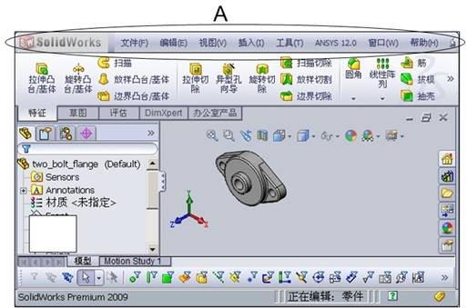
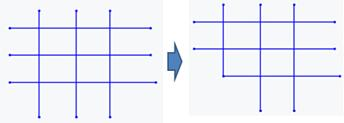
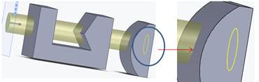
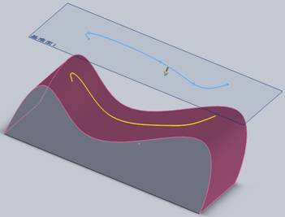
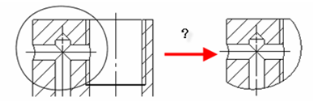
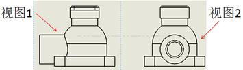

3.SolidWorks的零件工作界面中，视图定向下拉框3处是（）。
单一视图
4.图中A处是（）。
配置管理器
5.SolidWorks的零件工作界面中，D处表达最准确的是（）。
设计库
8.SolidWorks的零件工作界面中，B处表达最准确的是（）。
参考三重轴
10.图中A处是（）。
属性管理器
11.SolidWorks的零件工作界面中，C处表达最准确的是（）。
SolidWorks资源
12.SolidWorks的零件工作界面中，视图定向下拉框2处是（）。
前视图

菜单栏
15.SolidWorks的零件工作界面中，视图定向下拉框1处是（）。
上视图
17.SolidWorks的零件工作界面中，视图定向下拉框5处是（）。
上下二等角轴测
19.SolidWorks的零件工作界面中，视图定向下拉框6处是（）。
正视于
22.图中A处是（）。

特征管理器设计树
33.SolidWorks的零件工作界面中，A处是（）。
前导视图工具
34.图中A处是（）。
命令管理器
39.SolidWorks的零件工作界面中，视图定向下拉框4处是（）。
等轴测
1.草图绘制/退出草图的按钮图标是（）。
3.2D草图圆绘制中，先选中圆的圆心单击，然后再单击另一处，确定圆的半径，如下图所示。这是使用（）命令。
圆
6.尺寸标注中，使用（）命令实现？
尺寸链
7.如下图，在绘制草图模式下，绘制圆角时，输入的圆角参数表示（）。
半径
10.圆周阵列草图实体的参数输入如下图所示，A处表示（）。
圆周阵列角度度数
14.在2D草图绘制中，下图从左向右的操作可知是使用（）命令。

旋转草图
16.在2D草图绘制中，下图从左向右的操作可知是使用（）命令。

圆周阵列
17.绘制草图时，[快速捕捉]工具栏中的图标 表示。
最近端捕捉
20.在2D草图绘制中，下图从左向右的操作是使用（）约束命令。
相切
21.在2D草图绘制中，下图从左向右的操作是单击直线或先后单击直线的两个端点，拖动尺寸线到图示的位置，单击放下。直线标注种类是（）。
标注直线的长度
22.在2D草图绘制中，下图从左向右的操作是单击直线或先后单击直线的两个端点，拖动尺寸线到图示的位置，单击放下。直线标注种类是（）。
标注直线端点的竖直距离
23.绘制草图时，[快速捕捉]工具栏中的圆环+四个红色圆点图标 表示。
象限点
25.2D草图圆绘制中，依次选中三个点，通过三个点确定一个圆，如下图所示。这是使用（）命令。
圆周边
27.绘制草图时，[快速捕捉]工具栏中的红色圆点图标表示。
点捕捉
28.在2D草图圆弧绘制中，依次选中欲作圆弧的起来、终点和圆弧上的任意一点单击，通过这三点确定圆弧，如下图所示。这是使用（）命令。
3点圆弧
29.在2D草图绘制中，下图从左向右的操作是使用（）约束命令。

同心
30.在2D草图绘制中，（）裁剪工具是选择边角后，单击两条相交线要保留的部分，这两条线便共一个顶点，并自动截掉另一端。

边角
35.如下图，在绘制草图模式下，绘制多边形时，A处输入的参数表示（）。
内切圆直径
36.添加几何关系的图标按钮是（）。
42.在2D草图绘制中，（）裁剪工具是单击欲裁剪的草图实体，线条将从最近的端点被裁剪掉。
剪裁到最近端
45.在2D草图绘制中，（）裁剪工具是先选中两条边界线，然后单击边界外的草图实体，草图外的实体就是被裁剪掉了。
在外剪除
46.2D草图圆弧绘制中，先选中欲作圆弧的圆心单击，然后依次选中圆弧起点和终点单击，如下图所示。这是使用（）命令。
圆心/起/终点画弧
48.转换实体引用的功能是（）。
将已有的模型边线或者草图边线转换为当前的草图线条
49.绘制草图时，[快速捕捉]工具栏中的圆环+红色圆点图标 表示。
中心点捕捉
54.图标按钮的名称是（ ）。
修改实体
57.在2D草图绘制中，下图从左向右的操作是先后单击两条要标注的平行线，拖动尺寸线到图示的位置，单击放下。直线标注种类是（）。
标注直线端点的竖直距离
58.2D草图圆弧绘制中，先选中某一直线的端点单击，在该端点处所画圆弧与直线相切，再选中圆弧的终点单击，如下图所示。这是使用（）命令。
切线弧
60.线性阵列草图实体的参数输入如下图所示，A处最准确的表达是（）。
水平设定线性阵列角度方向
61.在2D草图绘制中，（）裁剪工具是先选中两条边界线，然后单击中间的草图实体，中间的草图实体就被裁剪掉了。
在内剪除
7.下图的草图可以正常生成拉伸实体（无须通过轮廓选择方式）。（）
正确
8.如下图所示，草绘和旋转轴位于不同的平面上，无法用旋转工具命令实现旋转特征。（）

错误
6.如下图，拉伸操作，草图圆拉伸的终止条件是（）。
成形到下一面
10.如下图，拉伸操作，草图圆拉伸的终止条件是（）。
成形到一面
11.下图的实体特征操作中，从左到右的变化，是使用圆角特征命令的什么圆角类型实现的。（）
完整圆角
13.下面特征操作最准确的表达是（）。
拉伸薄壁
14.在简单扫描中，如下图所示圆的圆心位置与螺旋线起点重合，可以用添加几何关系选择圆心和螺旋线，使二者关系为（）。

穿透
17.下面的拔模操作属于（）。
向里拔模
18.下图的实体特征操作中，从左到右的变化，是使用（）命令实现的。
倒角
22.下图的实体特征操作中，从左到右的变化，是使用（）命令实现的。
加强筋特征
23.如下图，拉伸操作，草图圆拉伸的终止条件是（）。
成形到实体
24.下图的实体特征操作中，从左到右的变化，是使用（）命令实现的。

旋转切除
26.下面特征操作最准确的表达是（）。
旋转凸台/基体中的薄壁特征
29.如下图，拉伸操作，是属于（）。

完全贯穿
30.实现下图操作，可以使用（）。

旋转凸台/基体
35.如下图，拉伸操作，草图圆拉伸的终止条件是（）。
成形到一顶点
40.如下图，拉伸操作，草图圆拉伸的终止条件是（）。

到离指定面指定的距离
44.下图的实体特征操作中，从左到右的变化，是使用（）命令实现的。
圆角
47.下面特征操作最准确的表达是（）。
拉伸切除中的反侧切除
50.如下图，将草图通过拉伸操作，拉伸深度为20mm，那么图中A处填（）。
20mm
53.如下图操作是（）。
放样特征
60.下图实现螺旋线的操作，是使用（）。
扫描切除
4.下图变形操作属于弯曲中的（）。
折弯
5.下面的实体编辑是（）。
分割
8.采用圆周阵列命令实现环绕的孔阵列，以下那种对象不能作为阵列参照（阵列参照设定阵列的中心轴线）？（）
圆锥表面
10.下图的包覆特征操作，属于（）。
浮雕
13.下图变化是组合中的哪种操作类型。（）
共同
15.下图从左到右的变化，是利用（）实现。
圆顶
25.下图哪种结果是组合命令不能实现的。（）
减去两个实体的交集
26.下面的实体编辑是（）。

线性阵列
32.下面的实体编辑是（）。
圆周阵列
33.下图变化是组合中的哪种操作类型。（）
删减
6.下面曲面编辑，从左向右的操作过程，是使用（）功能。
等距曲面
8.下面的曲线操作是通过一个草图圆生成的，这个操作使用了曲线的什么功能。（）
螺旋线
9.下面延伸曲面操作是使用（）终止条件。

成型到某一面
10.下面投影曲线的操作是属于（）类型。

面上草图
11.下面曲面编辑操作，是在矩形框的底部加了三角面，这是使用（）功能。
平面区域
12.下面填充曲面操作中，使用平面内的（）作为平面的边界生成平面。
实体边线
13.裁剪曲面是将曲面多余的部分裁剪掉，保留所需要部分。下面剪裁类型是（）。
标准
17.下面是由不封闭的草图曲线生成的曲面。该操作是使用什么功能实现。（）
拉伸曲面
18.下面曲面编辑，从左向右的操作过程，是使用（）功能。
替换面
20.下面实体编辑是哪种类型的线性阵列。（）
特征阵列
21.下面操作是从左边的部分椭圆草图为轮廓，以中心线为轴，旋转一定的角度生成的曲面，是使用什么功能实现的。（）
旋转曲面
22.裁剪曲面是将曲面多余的部分裁剪掉，保留所需要部分。下面剪裁类型是（）。
想互
23.下面曲面操作：将左边草图圆按路径生成右边的空心曲面，是使用什么功能实现的。（）
扫描曲面
24.平面区域的作用是将处于一个平面内的（）作为平面的边界生成平面。
草图
28.下面曲面操作从左边的三个草图曲线生成右边的曲面，是使用什么功能实现的。（）
放样曲面
29.在删除曲面操作中，在“选项”组框下选择（）选项。
删除
31.下面曲线操作，由左图的xyz坐标值参数输入，生成右图的3D曲线，这种生成曲线功能叫（）。
通过XYZ点的曲线
33.下面延伸曲面操作是使用（）终止条件。
成型到某一点
34.下面曲线操作，通过位于一个或多个平面上的点来生成一条曲线，这种生成曲线功能叫（）。
通过参考点的曲线
35.下面使用（）类型的直纹曲面操作，其中参考向量是上视基准面，角度为7deg。
锥削到向量
37.以下分割线操作，是使用（）分割类型。
交叉点
38.下面曲面编辑使用了（）实现右边图形。
圆角
39.下面使用（）类型的直纹曲面操作。
相切于曲面
40.在删除曲面操作中，在“选项”组框下选择（）选项。
删除并修补
41.以下分割线操作，是基准面通过模型投影，从而生成基准面与所选面的外部边线相交叉的分割线。这是使用（）分割类型。
轮廓
42.曲面编辑操作中，填充曲面功能的曲率控制用四种类型，其中使用所选边界内生成曲面，如下图所示，是使用（）类型实现。
相触
43.下面延伸曲面操作是使用（）终止条件。
距离
45.下面使用（）类型的直纹曲面操作。
正交于曲面
46.下面曲面编辑操作，利用左图的草图1和草图2作为修补边界，实现右图的效果，是使用（）功能。
填充曲面
50.以下分割线操作，是使用（）分割类型。 
投影
3.下面配合操作，是使用标准配合的（）功能，使矩形体的上表面和圆锥的底位于同一平面上。
重合
4.采用快速安装方式安装零件时，会出现安装方向不符合要求的情况，如下图所示，此时可以点击哪个快捷键调整安装朝向？
Alt
6.下面配合操作，是使用标准配合的（）功能实现的。
垂直
7.下面配合操作，是使用标准配合的（）功能实现的。
同轴心
8.在机械配合中，齿条小齿轮配合时，齿条选择（）。
B
10.下面配合操作，使用了重合方式中的（）。
同向对齐
11.下面配合操作，是使用高级配合的（）配合，使得面1到面3和面2到面4的距离相等。
宽度
12.下面两个齿轮进行齿轮配合，需要选择哪个面。（）
A面和B面
14.下面配合操作，是使用高级配合的（）配合，使得面1和面2位于右视基准面两边，并且面1到右视基准面和面2到右视基准面的距离相等。
对称
16.下面是机械配合中的凸轮配合，其中凸轮推杆选择哪个面。（）
A面
2.视图2是垂直于现有视图1中一条边线（边1）而展开的视图，这种生成视图的方法称为（）。
辅助视图
3.以下视图操作是使用（）命令，通过定义视图中的剖切线“剖开”视图，从面建立一个新的工程视图。
剖面视图
4.下面是局部视图，其使用的样式为（）。
相连圆
5.下面是工程图的相对视图操作，生成对应的图纸是（）。
A
6.图中使用（），可以在较小的图纸中以较大的比例显示较长的零件。
断裂视图
7.以下对齐视图操作，先选择一边线（边线1），然后选择（）命令，视图将旋转以保持所选直线在图纸上处于水平位置。
水平边线对齐
11.在下方左侧视图中绘制一条封闭的样条曲线，选择该样条曲线，采用何种视图命令生成右侧所示的视图。（）
断开的剖视图
12.下面是局部视图，其使用的样式为（）。
带引线圆
13.以下剖面视图操作是属于（）。
阶梯剖视图
15.以下视图操作，通过封闭的样条曲线对左边视图进行剪裁，只保留其中所需的部分，生成右边视图，是使用（）方法。
剪裁视图
18.下面使用旋转视图命令，从左图到右图旋转了（）度。
360
21.以下视图操作是使用（）命令，它的剖切线是由两条或多条线段以一定角度连接而成的。
旋转剖视图
23.视图的显示方式从左图变成右图，应使用什么操作？（）
右击视图，选择[切边]|[切边不可见]。
31.选择视图中的封闭样条曲线，请问采用何种命令产生右侧图所示的效果（即原视图中只保留样条曲线内部的视图）。（）

剪裁视图
32.以下视图操作，通过封闭的样条线，使左边的视图断开，可以看到产品里面的构造，是使用（）生成的。
断开的剖视图
34.通过已有视图1，建立其左视图（视图2），通过（）命令实现。

投影视图
35.请问在工程图中使用哪个视图命令可以完成的轴测剖切图（）。
剖切视图
36.下面是局部视图，其使用的样式为（）。
断裂圆
38.建立下侧的视图，通过哪个命令可以实现？（）
交替位置视图
40.下面是局部视图，其使用的样式为（）。
无引线圆
25.（）指的是物象的高度、宽度、厚度。
三度空间
29.下图所示的是属于立方体的哪一种透视现象？（）

成角透视
14.该作品的作者是康定斯基蒙特里安。（）
错误
该作品的作者是的作者是（）
康定斯基
6.作品《红黄蓝构图》的作者是（）
蒙特里安
12.作品《灰树》的作者是（）
蒙特里安
17.作品《第三国际纪念塔》的作者是（）
塔特林
21.作品《红黄蓝》的作者是（）
康定斯基
25. 该作品的作者是（）
康定斯基
26.作品《红黄蓝构图之一》的作者是（）
蒙特里安
1.在素描静物写生时通常会出现的问题有（）。
灰
花
糊
2.对于“鸟形不离球、蛋、扇”理解正确的是（）。
鸟头为球形
鸟的躯体为蛋形
鸟的尾巴为扇形
3.素描中，铺好基本形后可采用（）法深入刻画。
增加法
减少法
增加法和减少法同用
4.形体是指物象的（）。
外部轮廓
高度
宽度
深度
5.物象的形体表现与（）有着密切的关联。
结构
比例
轮廓
透视
6.倾斜透视包括（）。
平行倾斜
成角倾斜
7.通常情况下立方体都会发生哪些透视变化？（）
成角透视
倾斜透视
平行透视
8.三度空间指的是物体的（）。
高度
宽度
深度
9.意大利文艺复兴时期被誉为“美术三杰”的是（ ）。
米开朗基罗
达・芬奇
拉斐尔
10.素描教学是要培养学生对物象的（）能力。
观察分析
理解认识
创造性表现
11.室内平行透视，最多可见到哪几个面。（）
两个侧面
正面
顶面
地面
12.要了解和表现物象的轮廓，必须先研究物象的（）。
形体构造关系
基本形
13.在透视学上画圆或椭圆，一般采用（）法。
八点法
十二点法
14.素描中所用的笔一般有（）。
铅笔
炭笔
钢笔
木炭条
15.形体结构是由（）构成的。
圆球
方块体
16.常见的可以用来进行素描创作的纸一般有（）。
素描纸
宣纸
卡纸
17.圆体包括（）。
圆球体
圆柱体
圆锥体
18.根据每个人物头像所具有的个性特征，可以将人物头像分成（）。
三角形
方形
椭圆形
1.有关明暗交界线说法正确的有（ ）。
受光最少
受不到照射光
受不到反射光
最暗
2.关于投影的形状以下说法错误的是（ ）。
取决于光源的照射角度
取决于物体结构
3.关于画者和物象之间的距离与明暗关系说法正确的有（ ）。
距离越近，明暗对比越强
距离越远，明暗对比越弱
4.以形态的属性来划分，现实世界中的材质可以分为（ ）。
自然材质
人工材质
5.在基础素描训练中，对物象的空间表现一般采用（ ）方法。
线性透视表现
明暗光影表现
6.物象明暗规律中的三大面指的是（ ）。
灰面
暗面
亮面
7.明暗现象是由（ ）因素综合形成的。
光源
物象
人的视觉
8.以下对灰调说法正确的有（ ）。
最能显示物体的本质特征
层次最丰富、最微妙
从背光到受光是由深灰到浅灰的变化
是背光到受光的过度调
9.以下不属于西画空间表现方法的是（）。
高视点
远视距
微俯视
10.设计素描的表现手法有（）。
用面表现
线面结合表现
线条表现
11.我国古代绘画，常采用（ ）来表达透视空间。
多视点
高视点
远视距
12.影响物象质感表现的因素有（ ）。
画材
工具
光
材料本身组织结构
13.设计的三大原则是（ ）。
实用
美观
经济
14.光的照射方式一般有（ ）。
直射
折射
反射
15.素描中运用平直线表现物体可以给人（ ）感觉。
刚强
辽阔
安宁
16.以下对于高光说法正确的是（ ）。
高光不是任何情况下都有的
高光取决于物体的质地
取决于光源的照射角度
17.属于西方古典造型艺术大师的是（ ）。
罗丹
安格尔
伦勃朗
18.以下关于方形物体的明暗层次说法正确的有（ ）。
明暗转折的角度分明
对比清楚
每个面的明暗层次变化十分微妙
19.关于投影面积的大小说法正确的有（ ）。
光源位置越高投影越短
光源位置越低投影越长
1.对于素描中“虚实”的理解正确的是（）。
“虚实”就是一种模糊和清晰的感觉
画面中明暗对比强的为“实”
画面中明暗对比弱的为“虚”
2.设计素描教学，对“自然”形式美的研究说法正确的是（）。
由外而内窥视物象内在的微观组合形式
拆解物象的组织结构
与心灵的交融中发现“美”
3.以下属于创意素描的思维训练方法的是（）。
错觉
形的联想
不合理比例
意象造型
4.以下属于通过联想产生意象，再创造出独特意象造型的是（）。
青铜器时代的《酗亚方樽》
战国时代的《双凤鼓》
中国的龙凤图形
《牛头》
5.一般来说，传统具象形态的素描在虚实节奏关系的处理上以（）为原则。
前实后虚
受光部实
背光部虚
6.以下物象彼此在属性上有一定联系的是（）。
盘子与水果
盘子与水果刀
7.以聚合思维为主要思维方式的素描有（）。
结构素描
表现素描
8.以下对于联想和意象的关系说法错误的是（）。
联想中包含意象
意象是产生联想的前提条件
9.关于对不同时空物象的构成以下说法正确的有（）。
以某种意念为指导
在不少于两种物象于不同时空的重构中引发联想
在不少于两种物象于不同时空的重构中创造意象
10.艺术创作活动中的想象分为（）想象。
再现想象
创造想象
11.创意素描在思维方式运用上以下说法错误的有（）。
创意素描主要运用横向思维方式
创意素描主要运用竖向思维方式
创意素描主要运用聚合思维方式
12.打破常规时空关系的手法有（）。
悖理
比例逆反
13.创造性思维活动包括哪几种思维方式（）。
聚合思维
扩散思维
1.构成课程主要培养学生的（）
系统的思维能力
创新的思维方式
2.传统意义的艺术包括有（）
油画
雕塑
木刻版画
水墨
3.俄国构成主义的代表人物中作品较多的艺术家有（）
塔特林
康定斯基
4.19世纪末20世纪初欧洲文化艺术全面解放是因为（）
经济繁荣复苏
社会变革
意识形态的变化
以上都是
5.构成知识科学性价值体现在（）
注重训练有序思维
使养成预想和计划行为的习惯
培养科学的抽象思维和形象思维能力
6.荷兰风格派代表人物有（）
蒙特里安
里特维尔德
杜斯柏格
7.艺术风格派艺术主张有（）
拒绝使用任何具象元素
主张用纯粹几何形的抽象来表现纯粹精神
抛开具体描绘，抛开细节，避免个别性和特殊性，获得人类共通的纯粹精神表现
8.包豪斯的教育体系包括（）
建筑
绘画
设计
9.传统艺术的特点有（）
重情感轻理性
追求内容与形式的统一
抒发艺术家本身的情感和认知
形式和内容有很大的随意性和自由度
10.平面构成的传统工具有（）
通用纸张
特殊纸
绘制工具
颜料
11.构成主义的艺术主张有（）
所有的艺术家都该到工厂去，去工厂才有可能造就真实的生命个体
反对传统艺术家画室的概念，打破传统写实概念
主张用抽象的、理性的符号来表达艺术观念
主张艺术家与大工业生产联系起来
12.训练造型语言的运用包括（）
理解并掌握点线面体
理解并掌握光、色彩、空间、时间
理解二维和三维的抽象造型
理解并掌握具有材料特性和力学结构的各类造型
13.荷兰风格派主要由以下（）组成
艺术家
建筑师
14.构成知识实践性价值体现在（）
理论和实践相结合是教学的主要方式
学习构成规律，熟悉设计要素等是每个学生必须完成的任务
培养感知能力和创新能力
15.构成课程设置在低年级是因为（）
通过系统的思维训练引导学生展开理性思维
引导学生重视正确的思考方式
是从感性绘画到专业设计之间的桥梁
16.曾在包豪斯任教的艺术家有（）
克利
康定斯基
约瑟夫?阿尔贝斯
凡德罗
17.构成课程具有（）
基础性
科学性
实践性
18.构成知识基础性价值体现在（）
内容广泛
适用性强
着眼于艺术设计专业
符合其他视觉艺术专业的要求
19.绘制工具中的笔包括（）
毛笔
水粉笔
马克笔
针管笔等
20.绘制辅助工具包括（）
画板、调色板、水桶
图钉、胶带、胶水
橡皮、直尺
三角板、硫酸纸等
21.“构成”源自以下哪几种艺术流派（）
俄罗斯构成主义
荷兰风格派运动
22.设计与传统艺术相比更加具有（）
理性思维
严谨性
可操作性
23.俄国构成主义代表人物有（）
塔特林
马利维
康定斯基
24.学习构成知识需要掌握以下（）
熟悉构成原理
熟练掌握构成原理和技法工艺
训练各种造型语言
训练系统的思维方式
25.19世纪末20世纪出现的艺术流派有（）？
印象派
表现主义
26.包豪斯发展经历了哪三个时间段（）
1919-1925
1925-1932
1932-1933
27.绘制颜料包括（）
水粉颜料
墨汁
水彩颜料
丙烯颜料等
1.以下属于几何形面的有（）
三角形
平行四边形
梯形
矩形
2.点的（）都会使欣赏者产生丰富的联想
点的大小
点的疏密
点的方向
点的位置
3.造型艺术的基本形态要素有哪些？
点
线
面
4.自由曲线与几何曲线相比，有以下特点（）
更自由，更富于个性
更具有自然伸展、洒脱、随意、优美、自然的特征
不容易复制再现
5.点在构成中有（）
大小
形状
位置
面积
6.绘图直线笔线的特性有（）
干净
单纯
明快
整齐
7.几何曲线具有（）
现代感
节奏感
8.短线的特性有（）
停顿性
刺激性
较迟缓的运动感
9.直线的性格特征有哪些（）
整齐
干脆
严肃
阳刚之美
10.面的分类有哪些？（）
有机面
几何形的面
不规制的面
偶然面
11.线的千变万化，多种多样可以归纳为（）
直线
曲线
12.生活中点集成线的例子有（）
黑夜中路边的路灯光
有序排列的文字
沿路边种植的白杨树
13.垂直线的特性（）
下落、上升的强烈运动力
明确直接
紧张
干脆的印象
14.细线的特性有（）
纤细
锐利
微弱
有直线的紧张感
15.长线的特性有（）
持续的连续性
速度性的运动感
16.平面构成的研究对象是()
如何创造形象，怎样处理形象与形象之间的联系
如何掌握美的形式规律
按照美的形式法则，构成设计所需要的图形
培养审美能力
提高其构成的能力和创造“抽象形态”能力。
17.直线的特性有（）
明快
简洁
力量
通畅
18.线的组合方式有（）
规则的组合
不规则的组合
规则和不规则的组合
线的分割
19.点线面的组合受以下（）的影响
创作者性格
创作者情绪
创作者文化背景
以上都是
20.铅笔线和毛笔线的特性有（）
自如
随意
舒展
21.多个点的近距离设置会有线的感觉，从而多点的不同安置相应会使人产生（）的感觉。
三角形
四边形
五边形
22.线有序构成有哪些元素？（）
线性
长短
粗细
位置
方向
23.关于运动的线的说法正确的有（）
左右方向流动的水平线表现出流畅的形势和自然持续的空间
上下垂直流动的线给人产生力学自由落体感
由左向右上升的斜线，给人产生明快飞跃的一种轻松的运动感
由左向右下落的斜线，使人产生瞬间的飞快速度和动势，产生强烈的刺激感
24.生活中常见的点有（）
夜空中若影若现的星星
农家小院散落的粒粒粮食
草原上远处的只只牛羊
显微镜下的微小细胞
25.水平线的特性（）
安定
平静
左右延续
无限等
26.线的紧密排列产生的视觉印象（ ）
线如按照一定的规律等距离排列会形成色的空间并置产生出灰面的感觉。
线如不同距离间隔排列，或线的粗细变化，产生不同的肌理效果。
线的形状不同的等距离排列，将会产生凹凸效果。
线的等距离排列会产生灰面。
27.粗线的特性有（）
厚重
锐利
粗犷
严密中有强烈的紧张感
28.线的有序构成有哪些规律化的形式？
重复
渐变
发散
29.平面构成当中，点的最基本形态是（）
圆点
方点
焦点及不规制点形
30.曲线可以分为（）
几何曲线
自由曲线
1.以下属于旋转对称的有（）
旋转90度的图形
旋转180度的图形
2.以下符合对称审美原则的是（）
人的身体构造
蝴蝶的双翅
3.以下属于类似形状的有（）
正方形
平行四边形
近似于方形的矩形
有机形的方形
4.在画面上要达到既有对比又有调和的统一的画面，就必须通过设计者进行艺术加工，需要注意（）
同种元素的组合
类似元素的组合
不同元素的组合
5.调和表现在（）
作品各个部分关系和谐
减少作品的对比和差异
给人以视觉美感
6.在造型艺术中，体现相反因素的有（）
大小
方向
粗细
虚实
7.以下属于对比的是（）
运和静
刚硕和柔软
高和矮
强和弱
8.形式美中空间的变化有（）
前后
上下
左右
9.以下属于统一的原理有（）
接近的原理
连续的原理
闭合的原理
10.在平面构成设计中，对比体现在（）
动静
明暗
质感
方向等
11.形式美中形体的变化有（）
大小
高低
粗细
曲直
12.在构成设计中均衡是指以下（）的视觉平衡
图像和色彩的面积大小
图像和色彩的轻重
图像空间的视觉平衡
观者心理上的视觉体验
13.对称的形式有（）
轴对称
中心对称
14.在造型艺术中，体现相反因素的有（）
形态
色彩
质感
15.平衡比对称在视觉上显得（）
更灵活
更新鲜
富有变化
有统一的美感
16.形式美中色彩的变化有（）
深浅
浓淡
17.在平面构成设计中，对比的形式有（）
空间对比
聚散对比
大小对比
动静对比
18.对称的特点有（）
可以重叠
等形等量
容易得到统一
具有良好的稳定感
19.对称种类有（）
轴对称
中心对称
旋转对称
移动对称
扩大对称
20.形式美中方向的变化有（）
正反
旋转
内外
21.以下哪些现象给人以美的视觉享受（）
草原上盛开的朵朵鲜花
起舞蝴蝶美丽的翅膀
湛蓝水面的涟漪
浩瀚夜空中的点点星辰
22.形式美法则中的变化形式有（）
形体的变化
方向的变化
空间的变化
色彩的变化
23.以下属于时间艺术的用语的有（）
节奏
韵律
节拍
1.骨骼的作用（）
骨骼和基本形就如同楼房墙体和室内空间
既起到管辖编排形象的作用，同时也给形象以空间阔窄的功能
可将基本形做不同的编排，使之有秩序的排列
2.密集骨骼中的基本形可以采用（）
具象形
抽象形
几何形
3.平面构成设计中发射的特点有（）
具有规律性
发射中心是最重要的视觉点
有时可造成光学的动感
有时可产生爆炸性的效果
4.渐变的类型有（）
形状、大小渐变
方向、位置渐变
色彩渐变
骨骼的渐变
5.重复构成的分类有（）
基本形的重复
骨骼的重复
各种要素的重复
色彩的重复
6.规律性规格种类有（）
重复性骨骼
渐变骨骼
发射骨骼
7.以下属于近似构成的有（）
某种树的叶子
同种类的鸟
同种类的鱼
同种类的小狗
8.以下属于渐变类型的有（）
基本形渐变，骨格不渐变的构成
基本形渐变，骨格不变的构成
基本形渐变，骨格也渐变的构成
9.非规律性的骨骼构成方式有（）
密集
渐变
近似
10.骨骼分类有哪几类（）
规律性骨骼
非规律性骨骼
有作用性骨骼
无作用性骨骼
11.以下属于发射现象的有（）
太阳发射的光芒
电灯泡发出的光束
路灯发出的光束
12.以下属于基本形的重复的有（）
高楼上一个个的窗子
地面上的砌砖
纺织品上的图案
13.下列属于骨骼的特点有（）
骨格是支撑构成形象的最基本的组合形式
骨骼使形象有秩序的经过人为的构想，排列出各种宽窄不同的框架空间
骨骼起到编排形象和管理形象的空间作用
14.规律性的骨骼构成方式有（）
重复
近似
渐变
发射
特异
15.以下属于发射的特征的是（）
有发射中心
具有方向的发射线
是一种重复单位围绕中向中心聚集的特殊的重复形式
16.渐变网格可以采用以下哪些数学规律来划分（）
等差数列
等比数列
费博那基数列
调合数列
17.以下属于发射现象的有（）
光芒四射
水花四溅
盛开的花朵
18.近似构成可以分为（）
形状的近似
骨骼的近似
19.近似构成是指在哪些方面有共同的特征（）
形状
大小
色彩
肌理
20.发射构成的种类有（）
中心点发射
螺旋式发射
同心式发射
21.以下属于发射构成的有（）
一个发射点的构成
离心式发射构成
向心式发射构成
多个发射点不同方向发射的构成
22.密集骨骼的类别有（）
向点密集
向线密集
向基本形密集
自由密集
23.以下属于近似基本型的有（）
正三角形
直角三角形
等腰三角形
任意三角形
1.图形创意应用领域很广泛，比如（）
平面设计
广告设计
包装设计
服装设计等
2.图形联想方法有（）
接近联想
类似联想
对比联想
因果联想
3.图像是一种世界级语言，具有以下特征（）
不受国家、民族等因素的限制
是人类可以理解的
是最大程度贴近人类情感的形式
迅速引发人类的直觉
4.图形创意的形式有（）
图形符号
图形形式的创意
构成与转化
5.图形传播的理论学说包括（）
格式塔理论学说
结构主义理论学说
生态理论学说
符号理论学说
认知理论学说
6.图形是一种世界级的语言，不受（）的限制
国家
种族
地域
7.图形创意设计的特点有（）
运用独特的创意和表现方法设计图形
力求准确表达设计主题
用视觉艺术的手法将概念语言翻译成图形语言的设计实践过程
创造性思维是图形设计的关键
8.表意准确、形象生动、外观优美的图形能够迅速提高观者（）
认知能力
想象能力
记忆能力
9.图形创意的语境包括（）
图画式语境
意象语境的创造
幻象语境创造
10.能够吸引观者的图形具有以下特点（）
表意准确
形象生动
外观优美
11.平面设计，其设计的对象和范围限定在“二维”的空间维度之中。二维的设计，主要是指（）
图形
文字
结构
12.共生构成的种类有（）
共形
共线
1.以下属于标志的表现技法有（）
重复
对比
调和
均衡
2.广义标志的特点有（）
单纯、显著、容易识别
以图像或者符号位视觉语言
较为直观
表达一定的意义和情感
3.以下哪些是设计艺术的特点 （ ）
创造性特点
审美性特点
科技性特点
实用经济性特点
艺术造型性特点
4.广告设计主要追求以下（）目标
创新、创意、独特
艺术性的表达
社会责任感
5.按照传播媒介不同，以下属于平面广告的有（）
报纸广告
杂志广告
户外广告
直邮广告
6.设计艺术按课程为主划分为（ ）
平面设计
现代设计艺术
环境艺术设计
工业产品设计
7.平面构成研究的是（）
形态
构图
表现力
美感
8.艺术的审美性表现为真、善、美三个方面，关于艺术中的“真”说法正确的是（）
是生活真实升华为艺术真实
是化“真”为“美”的艺术形象表现
9.以下属于摄影构图方式的有（）
均衡式构图
对称式构图
变化式构图
对角线构图
10.平面广告设计可以分为（）
海报招贴
报纸杂志海报
DM海报
网页宣传等
11.静物构图主要通过以下哪些方面的处理来表现目标物（）
构图
布局
光线
色彩等
12.以下属于标志设计的在造型方面的对比有（）
大小对比
形状对比
位置对比
疏密对比
13.标志的特征有（）
信息化特征
个性化特征
象征性特征
审美性特征
演变性特征
14.以下属于标志设计中渐变的构成方式的是（）
内外式
水平式
垂直式
倾斜式
15.下面属于平面性广告的是（ ）
杂志广告
报纸广告
路牌广告
车身广告
16.广告的作品和影响表现在以下哪些方面？（）
商业推广
文化交流
文化传播
以上都是
17.设计（design）,在汉语中最基本的词义是（ ）
设想
计划
18.按照传播范围分类，以下属于平面广告的有（）
国际性广告
全国性广告
地方性广告
19.广告设计师应该具备的能力有（）
专业认知能力
形象化能力
学习能力和审美能力
信息处理能力
创造能力
20.关于设计艺术的说法正确的有（）
是艺术与科学的结合体
具有高附加值与艺术含量
是一种文化现象
是实用性与审美性的有机统一
21.平面构成教学目的是（）
推进学生进一步研究构成要素和规律
培养学生对形态的创造力
培养学生的审美能力
为艺术设计创作基础条件
22.以下属于标志的有（）
公共场所标志
交通标志
安全标志
操作标志等
23.以下属于标志设计的在渐变方面应用有（）
外形渐变
方向渐变
大小渐变
明暗渐变等
24.平面构成强调形态之间的（）
平衡
比例
对比
节奏
韵律
25.下列属于广告设计要素的是（ ）
广告主
广告信息
信息接收者
广告媒体
广告目标
1.SolidWorks提供的视图缩放功能有（）。
整屏显示
局部放大
动态放大或缩小
放大所选范围
2.在设计库面板中，我们可以更加方便地管理和使用设计资源，如（）等，极大提高了操作效率。
常用特征库
常用零件库
常用注解符号
Toolbox零件
3.SolidWorks工作界面的状态栏可以提供信息有（）。
当操作草图时，显示草图状态及指针坐标
在将指针移动一工具上时或单击一菜单项目时的简要说明
为所选实体常用的测量，诸如边线长度
表示你正在装配体中编辑零件的信息。
4.欲重复上一命令可以（）。
按Enter键
选择[编辑]｜[重复上一命令]
右键单击图形区域，然后选取[最近命令]，从清单中选择一个命令作为下一命令
5.欲以正视视图显示模型，在模型中，可以选择（），单击[正视于] 按钮。
基准面或平面
任何以单一草图所生成的特征
6.Solidworks新建文件时，打开“新建Solidworks文件”对话框，在对话框中提供了（）3个图标按钮。
零件
装配体
工程图
7.要显示和隐藏任务窗格，可以从（）打开。
选择菜单[视图]｜[任务窗格]
在图形工作区的边界上右击，然后在快捷菜单中选择[任务窗格]
8.Solidworks资源面板中，包括的标签有（）。
开始
社区
在线资源
机械设计
9.SolidWorks提供辅助显示方式有（）。
隐藏线可见
草稿品质HLR/HLV
透视图
剖面视图
10.SolidWorks提供三种主要的模型显示方式，分别是（）。
线架图
消除隐藏线
上色模型
11.对于一个空文件，特征设计树中默认有以下几项。（）
阀盖
注解
材质
原点
12.在SolidWorks中视图显示样式有（）。
线架图
隐藏线可见
消除隐藏线
上色
13.SolidWorks的图标使用起来很方便，并且可以根据实际要求来定制，当我们要将一类图标命令（目前没有显示）调出来使用，可以使用的方法是（）。
用右键单击窗口边框，出现快捷菜单，然后选择或消除所选择一工具栏名称
选择[工具]｜[自定义]，出现[自定义]对话框，在[工具栏]标签上选择要显示的工具栏
14.参考三重轴在（）环境下显示。
零件设计
装配体设计
15.SolidWorks的操作非常灵活，运用一些技巧更能提高设计效率。（）操作可以完成旋转模型操作。
在视图工具栏中单击[旋转视图]，然后拖动指针
选择[视图]｜[修改]｜[旋转]，然后拖动指针
按住中键移动鼠标
按方向键，按住Shift键以90度增量旋转
16.SolidWorks视角选择的方法有（）。
单击“标准视图”工具栏上的“视图定向”按钮
按键盘上的“空格”键
17.属性管理器一般提供下面项目（）。
标题栏
按钮
组框
18.命令管理器由两部分组成：（）。
控制区
按钮显示区
19.打开Solidworks的零件设计界面，系统提供了3个默认的基准面，分别是前视基准面、（）。
上视基准面
右视基准面
20.建立新零件时，系统默认建立三个基准面和一个原点，用于确定零件在空间的位置，下列描述正确的是（）。
不能删除默认的基准面
默认的基准面名称是从零件模板中沿用的，但可以修改，如改为front基准面
三个默认基准面的交点就是原点
1.定义直接的几何关系有（）
水平
竖直
固定
2.2D草图绘制中，相交创建草图命令主要用来在（）之间的交叉处生成草图。
基准面和曲面
两个曲面
基准面和整个零件
曲面和整个零件
3.阵列草图的方法有（）。
圆周草图阵列
线性草图阵列
4.绘制基础草图包括（）
直线
矩形
圆
多边形
5.在2D草图绘制下，删除草图实体的方法（）。
单击标准工具栏上的“删除”按钮
单击菜单[编辑]｜[删除]
按Delete键
6.绘制直线的方式有（）。
拖动式
单击式
7.在草图绘制中，用户经常需要标注尺寸，这些尺寸是有属性的。当用户给这些尺寸定义名称时，可以输入（）。
英文字母
数字
中文
8.在2D草图绘制中，草图圆的尺寸标注方法有（）
标注圆的半径
标注圆的直径
9.在2D草图绘制下，修剪草图的裁剪工具有（）。
强劲剪裁
边角
在内剪除
剪裁到最近端
10.Solidworks2009中，退出草图绘制的方法有（）。
按Esc键
单击设计树上的✔
11.2D草图绘制中，槽口按钮组包括（）
直槽口
中心点直槽口
三点圆弧槽口
中心点圆弧槽口
12.在2D草图绘制下，延伸草图的作用是将已绘制的（）的端点沿原来的方向延伸下一个草图实体。
直线
曲线
13.2D草图绘制中，倒角的方法有（）。
角度距离
距离－距离
“距离－距离”和“相等距离”
14.在绘制草图时用户可以使用（）方法将光标恢复到选择模式下。
按键盘上的Esc键
再次单击上次使用的草图工具按钮
单击[选择]按钮
在图形区域右击鼠标，从快捷菜单中选择[选择]命令
15.2D草图绘制中，矩形按钮组主要包括（）。
边角矩形
中心矩形
平行四边形
16.SolidWorks在草图中进行提供的倒角形式有（）。
角度距离
不等距离
相等距离
17.2D中草图的绘制模式有（）。
单击-拖动
单击-单击
18.2D草图绘制中，转换构造线的作用是（）。
将草图实体转换为构造线
将构造线转为草图实体
19.在Solidworks中，绘制的直线类型有（ ）。
直线
中心线
20.在SolidWorks建模过程中，最基础的是草图绘制，以下在（）平面上能绘制草图。
基准面
实体的平面表面
1.欲沿曲线生成多个参考点，其分布类型有（）。
距离
百分比
均匀分布
2.基准点主要应用场合有（）。
作为某些特征定义参数的参考点
作为有限元分析网络上的施力点
计算机计算公差时，指定附加基准目标的位置
3.创建基准轴对话框中，提供了的常用选项有（）。
两点/顶点
点和面/基准面
圆柱/圆锥面
4.以下（）可以定义基准轴。
两点/顶点
两平面
圆柱/圆锥面
5.基准轴可以作为（）的中心线。
圆柱体
圆孔
旋转体
6.下面（）情况满足建立一个新基准面的条件。
一个面和一个距离
一个面和一个角度
一段螺旋线
7.创建基准点对话框中，提供了的常用选项有（）。
圆弧中心
交叉点
8.创建坐标系步骤包括（）。
根据需要选择原点
根据需要选择X轴方向
根据需要选择Y轴方向
根据需要选择Z轴方向
9.基准面可用于（）。
绘制草图
生成模型的剖面视图
用于拔模特征中的中性面
10.基准轴的应用场合有（）。
作为中心线
作为阵列轴
配合参考轴
1.拉伸特征分为下列（）特征。
实体或薄壁拉伸
凸台/基体拉伸
切除拉伸
曲面拉伸
2.放样通过在轮廓之间进行过渡生成特征，可以（）生成放样。
两个轮廓
多个轮廓
3.下列要素属于参考几何体的是（）。
点
坐标系
4.当使用引导线生成放样时，以下建议成立的是（）。
引导线必须与所有轮廓相交
可以使用任意数量的引导线
引导线可以相交于点
引导线可以比生成的放样长
5.在放样命令中，下列说法正确的是（）。
使用引导线放样用于控制轮廓的形状
使用引导线放样用于控制轮廓的放样的放向
使用中心线放样所有中间截面的草图基准面都与此中心线垂直
中心线可与引导线共存
6.如果想两侧对称拉伸，可以通过（）实现。
双向拉伸（即方向1和方向2输入相同距离）
选择“两侧对称”
7.旋转特征的旋转类型有（）。
单向
两侧对称
双向
8.扫描特征路径可以是（）。
一张草图
一条曲线
一组模型边线中包含的一组草图曲线
两条不连接的曲线
9.SolidWorks圆角类型有（）。
等半径
变半径
面圆角
完整圆角
10.通过圆角命令在一个面的（）上生成圆角。
所有边线
所选的几组面
所选的边线
所选的边线环
1.特型操作方法有（）。
无约束特型
点约束特型
草图约束特型
2.实体编辑中曲线驱动的阵列允许沿（）生成阵列。
曲面
3D曲线
平面曲线
平面
3.在由草图驱动的阵列中，可以使用（）作为参考点。
源特征的重心
草图原点
顶点
另一个草图点
4.特型就是通过（）所选曲面在模型上生成一个变形曲面。（）
展开
约束
拉紧
5.实体编辑中“曲线驱动的阵列”所提供的曲线方法有（）。
转换曲线
等距曲线
6.曲线驱动阵列的有效曲线的规定有（）。
只可以使用一条曲线
曲线的所有阶段间必须相切
7.利用弯曲工作，可以对已有零件进行如下操作（）。
折弯
扭曲
锥销
伸展
8.可以进行终止条件配置的特征是（）。
拉伸
旋转
9.在SolidWorks中除可以生成线性阵列、圆周阵列外还可以生成（）。
曲线驱动的阵列
填充阵列
使用草图点生成阵列
使用表格坐标生成阵列
10.当筋沿草图的垂直方向拉伸时，如果草图未完全与实体边线接触时，则会自动将草图延伸至实体，SolidWorks提供的延伸方式有（）。
线性
自然
11.包覆特征的类型有（）。
刻划
浮雕
蚀雕
12.实体编辑中“曲线驱动的阵列”所提供的对齐方法有（）。
与曲线相切
对齐到源
13.一旦添加了配置，可以对各个配置进行尺寸修改，修改的作用方式取决于（）。
此配置
所以配置
指定配置
14.包覆特征就是将草图包覆到（）上，生成填料特征或切除特征。
平面
非平面
15.在系列零件设计表中，适用于零部伯的标题是（）。
$配置
$显示
$属性
16.变形特征的创建方法有（）。
点变形
曲面变形
17.实体编辑中“填充阵列”的阵列方式有（）。
穿孔
圆周
方形
多边形
18.组合的操作类型有（）。
添加
共同
删减
19.除了尺寸和压缩状态外，还可以保存在配置中的项目有（）。
终止状态
颜色
几何关系
方程式
20.在SolidWorks中圆周阵列的阵列轴除选择坐标轴和线性边线或草图直线外，还可以选用（）。
圆形边线
圆柱面
旋转面
角度尺寸
1.曲线操作中，组合曲线功能是指通过（）组合从一条单一曲线来生成组合曲线。
曲线
草图几何
模型边线
2.延伸曲面的延伸类型有（）。
同一曲面
线性
3.拉伸曲面的终止条件有（）。
给定深度
成形到一顶点
成形到一面
两侧对称
4.裁剪曲面是将曲面多余的部分裁剪掉，保留所需要部分。可以使用（）作为剪裁工具来剪裁相交曲面。
曲面
基准面
草图
5.拉伸曲面的开始条件有（）。
草图基准面
曲面/面/基准面
顶点
等距
6.平面区域的作用是将处于一个平面内的（）作为平面的边界生成平面。
草图
实体边线
曲面边线
7.曲线操作中，螺旋线的定义方式有（）。
螺距和圈数
高度和圈数
高度和螺距
8.在扫描曲面操作中，方向/扭转控制方式有（）。
堕路径变化
保持法向不变
沿路径扭转
以法向不变沿路径扭曲
9.曲线工具栏上的分割线按钮可以将草图投影到（）。
曲面
平面
10.旋转曲面功能中，旋转类型有（）。
单向
双向
两侧对称
1.装配体的特征管理器设计树与零件的特征管理器设计树差别有（）。
装配体的特征管理器设计树没有原点
装配体的特征管理器设计树添加了“配合”顶
零件的特征管理器设计树可以指定材质
2.零件在装配体中有（）状态。
还原
轻化
隐藏
压缩
5.配合的对齐条件有（）。
同向对齐
反向对齐
9.对于一个已经创建的装配体，可以对其进行分析，它的关键步骤可以分为（）。
分析装配体
编辑装配体
爆炸装配体
材料明细表
13.装配体设计可以采用（）设计方法。
自下而上
自上而下
15.在装配体的标准配合操作中，相切功能要求其中至少有一个（）。
圆弧
曲面
17.在装配体中添加零部体的方式有（）。
直接插入零部件
在装配体中创建新零件
插入子装配体
随配合复制
18.打开一个新的装配体，就可以向其中添加部件。完成该操作的方法有（）。
从Windows资源管理器中拖放
从打开的零件文件中拖放
使用下拉菜单插入部件
19.在装配体中，创建孔系列特征里面，提供的孔规格有（）。
柱孔
锥孔
孔
20.在装配体中，移动零部件的方式有（）。
自由拖动
沿实体
由三角形XYZ
到XYZ位置
1.以下关于剖面视图说法正确的是（）。
剖面视图需要人工绘制草图，默认的草图工具为直线
选择剖面视图的视图标号，并在属性管理器中选中手工视图标号复选框，可以给定任意字符的视图标号
2.可以将SolidWorks的工程图文件保存为（）。
DWG/DXF
JPG
EDRW
3.以下关于投影视图说法正确的是（）。
可以使用投影视图建立其投影视图
可以使用剖面视图建立其投影视图
可以使用轴测图建立其投影视图
4.以下关于断开的剖视图说法正确的是（）。
用户不能为局剖视图建立断开的剖视图
用户不能为交替位置视图建立断开的剖视图
5.关于装配图的材料明细表，说法正确的有（）。
材料明细表可以保存为Excel文件（*.xls）格式，以便于其他应用
材料明细表可以保存文体文件（*.txt）格式
无论装配体的结构如何，用户可以在明细表中显示所有零件
6.工程图中的尺寸由（）等要素组成。
尺寸数字
尺寸线
箭头
延伸线
7.以下关于相对视图说法正确的是（）。
建立的相对视图不与任何视图对齐，可以在工程图中任意拖动
使用相对视图命令，用户可以利用模型中两个正交的表面或参考平面分别定义各自的视图方向
如果用户无法使用默认的视图建立特定方向的视图，可以使用相对视图命令建立工程图中第一个视图
8.在工程图的剖面视图中，剖切线可以是（）。
直线
多条相连的线段
9.工程图的标准三视图使用的视图方向是（）。
前视图
上视图
左视图
10.在SolidWorks中，产品工程图分为两个层次：（）。
工程图
出详图
11.工程图的模型视图生成视图的方向有（）。
前视图
上视图
左视图
右视图
12.以下关于局部视图说法正确的是（）。
局部视图也称为局放大图
可以利用轴测图建立局部视图
可以在装配体中建立局部视图
13.在装配体的工程图中，用户可以使用“零件序号”工具显示箭头指向的零件的有关内容。在零件序号上，可以显示（）。
零部件的项目号（序号）
零部件的数量
用户自己定义的文字
零部件中定义的自定义属性
14.在工程图的局部视图中，使用草图几何体来包围需要放大的部分，通常使用（）。
圆
椭圆
15.在工程图中，用户可以建立和使用的表格是（）。
材料明细表
孔表
修订表
16.以下关于断裂视图说法正确的是_____。
拖动折断线，在视图中定位折断线位置，可以确定视图中需要断开的范围
可以在断裂视图的内部右键单击，从弹出的快捷菜单中选择[撤消断裂视图]命令取消视图的断开
17.在工程图中插入材料明细表时，显示零件的类型，正确的是（）。
仅限零件
仅限顶层
缩进式装配体
18.以下关于辅助视图说法正确的是（）。
选择模型中的一条边线，然后单击辅助视图命令按钮，这样确定的视图投影方向
在辅助视图的属性管理器中选中反转方向复选框，可以改变视图的方向，也可以双击视图箭头改变视图方向
可以绘制一条草图直线作为辅助视图的参考边线，但必须先激活父视图才能生成辅助视图
选择辅助视图，然后单击旋转视图命令按钮，可以将视图旋转为特定方向
19.如下关于模型自定义属性的说法，正确的有（）。
选择下拉菜单的[文件]｜[属性]命令，可以定义或修改零件的自定义属性
模型的自定义属性可以直接用于工程图的文字注释
模型文件的自定义属性可以用在装配图的材料明细表中
模型文件的自定义属性和“配置特定”的自定义属性，其用法和含义相同，只不过后者会对特定的配置而言
20.以下关于工程图纸和工程视图说法正确的是（）。
SolidWorks工程图文件可以包含多张工程图纸，在每张工程图纸中可以包含多个工程视图
在工程图中，每个视图具有一个唯一的模型参考，但每张图纸可以包含不同的视图
用户在工程图设计中可以随时修改图纸格式
工程图纸建立以后，用户可以通过[图纸属性]对话框来改变当前图纸的名称、比例或投影类型
1.下列属于常用研究方法的是（ ）。
实验法
模拟实验法
2.Archer将程序归纳为（ ）等几个部分。
分析
创造
实施
3.随着社会分工的具体化和不断细化，产品部件之间关系问题的解决与产品和人之间关系问题的解决逐渐分开，产生了（ ）等几种工作分化。
工程设计
工业设计
4.下列属于创新设计理论的是（ ）。
头脑风暴法
逆向思维法
列举法
十字坐标法
5.系统的特点包括（ ）。
系统具有独立的功能
系统具有整体性
系统具有相对性
系统设计的普适性
6.设计方法可以是（ ）。
设计程序
技术
手段
工具
7.下列属于集成信息模型的是（ ）。
功能模型
装配模型
零件模型
工艺规划模型
8.下列属于设计相关学科的是（ ）。
工程学
市场营销学
大众心理学
人体工学
9.产品企业市场营销的要素包括（ ）。
质量
设计
营销
价格
10.技术方法在实际的设计活动中，能够起到（ ）的作用。
清晰化、可视化设计
加速设计进程
合理化设计
11.有一些设计方法不仅是理论的总结，同时也包含具体的技巧因素，比如（ ）。
仿生设计法
并行设计
生态设计
12.设计定位中的环境分析包括（ ）。
生态环境
人文环境
人体环境
使用环境
13.设计管理具有的功能包括（ ）。
USP设计
企业形象设计
文化理念表达
14.设计逻辑的特点包括（ ）。
分析-综合-评价
分析-综合-再分析-再综合-评价
1.计算机辅助管理的几个阶段包括（）。
1965-1970
1970至今
1953-1965
2.并行工程的核心内容包括（）和并行工程集成框架。
过程重组
产品开发队伍重构
数化产品定义
协同工作环境
3.无形价值的产生通常源自于（）。
品牌
信任与关系
创新
4.价值工程分析阶段的工作步骤包括（）。
功能定义
功能整理
功能计量
功能价值评价
5.价值工程创新阶段的工作步骤包括（）。
方案创新
概略评价
方案具体化和试验研究
详细评价
6.产品的外观造型是由众多因素共同影响而形成的，包括（）。
产品的功能及特点
产品的使用环境
产品的使用者
人机工程学因素
7.人机工程学在各国的称谓，正确的是（）。
美国“人类工程学”
美国“人因工程学”
欧洲“人类工效学”
8.方案评价主要包括（）。
技术指数
经济指数
社会指数
环境指数
9.人机工程在产品设计中的运用方法包括（）。
人体模型法
人体参数法
实验和实测法
10.目前，（）计算机辅助设计技术处于广泛运用阶段。
第二代
第三代
11.我们在听到某个声音时，不光能辨别它的大小和方向，而且还能判断出声源的距离。这主要是因为来自不同方向的声源与左右耳的距离存在差异，声音到达左右耳的时间不同引起的，这就是所谓的（）。
双耳效应
立体声效应
12.设计管理的概念最早源于20世纪初，（）都是设计管理的先行者。
德国的AGE
伦敦的运输系统
意大利的Olivetti
13.一般情况下，指示、显示器的设计应考虑或遵循的因素包括（）。
观测距离与角度
色彩对比度
环境与照明
指示刻度的长、宽、高
14.符号设计的一般规律包括简洁性、概括性、（）。
形象性
易理解性
整体性
标准性
15.指示、显示器的设计应考虑或遵循（）等因素。
观测距离
色彩对比度、观测角度
环境状况、照明
指示刻度的长、宽、高
16.控制噪音可以从（）等几个方面入手。
受影响者
传播途径
声源
1.建模的方法主要包括（ ）。
线框建模
表面模型
实体模型
2.下列属于二维绘图软件的是（ ）。
Photoshop
Painter
3.E-book项目CAID系统平台的功能结构具备的特征包括（ ）。
强大的三维建模工具
多种等级（材质与环境）的显像功能
具备友好的用户界面和操作环境
具备基本的工程功能和CAD/CAM数据传输接口
4.编制调查问卷时的注意事项包括（ ）。
语言、文字清楚易懂
不要使用专业性强的词语
避免歧义及暗示性用语
不能或尽量少涉及个人隐私问题
5.参数化的方法主要有（ ）。
变量驱动
尺寸驱动
6.运用系统分类法与并行结构分析法来进行课题的研究设计时，可以将影响设计原创性的因素分为（ ）。
概念设计的创造性及其表达
原设计信息的接受与反馈，概念模型的可实现性
1.绿色设计的主要内容包括（ ）。
产品材料的选用与管理
产品的易拆装设计
产品的可回收性设计
产品的成本控制
2.对于产品的材料选择，应该注意的方面包括（ ）。
优先考虑环保材料，包括无毒无放射性材料、可循环或可回收再利用的材料，尽量不同或少用有毒、有害、容易对环境造成污染的材料或原材料
少用或不同稀有材料，尽量使用他们的替代材料
考虑利用废料、余料、或回收材料的可能性
应尽量减少产品中材料的种类，以便于回收和处理
3.网络式虚拟现实系统的功能包括（ ）。
电子商务及产品发布
远程教学及模拟训练
建筑物展示
4.虚拟现实的代表软件包括（ ）。
CULT3D
Superscape
Mgi reality系列软件
Vr toolbox vrwork系列软件
5.几何式虚拟现实的代表软件包括（ ）。
CULT3D
Superscape
6.几何式虚拟现实系统的优点包括（ ）。
交互性强
可自由浏览场景
可自由产生虚拟的场景
提供立体视觉效果
7.绿色设计通常也被称为（ ）。
生态设计ED
环境设计DFE
生命周期设计LCD
8.下列属于影像式虚拟现实系统缺点的是（ ）。
交互性差
只能定点观看场景
无法提供立体的视觉效果
9.并行工程可以在（ ）等方面降低成本。
它可以将错误限制在设计阶段
强调“一次达到目的”
在设计时就考虑到加工、装配、检验、维修等因素
10.绿色设计产生的社会效益和经济效益主要体现在（ ）。
节约资源、保护环境
实现经济和环境的协调、稳定发展
有助于提高企业产品的竞争能力
11.凹面式虚拟现实系统包含（ ）。
具有130°-150°水平视角、40°垂直视角及360°环状投影墙
具有三个用于图像发射的3D立体影片，三台投影机
装有虚拟现实软件的个人电脑并与投影机相连
配备观众使用的立体眼镜
12.现代人类社会所要面对的问题主要包括（ ）。
环境
人口
资源
13.绿色设计的准则包括（ ）。
材料准则
结构准则
制造准则
能耗准则
14.影像式虚拟现实系统的优点是（ ）。
场景逼真自然
对电脑的速度要求不是太高
制作简单快速
1.任何复杂的物象形体都可以用方体和圆体来概括。（）
正确
2.形体结构对形体的外观特征没有决定性作用。（）
错误
3.圆球和方块体构成了形体结构最基本的特征。（）
正确
4.形体本身包含着两层含义，即“形”和“体”。（）
正确
5.素描可以通过多种载体将画者观察的感受、构思的臆想、情绪的宣泄视觉化。（）
正确
6.要认识什么是设计素描，首先必须理解什么是素描。（）
正确
7.素描教学中存在的问题，归根结底是对素描涵义认识不足。（）
正确
8.学习素描，首先要解决的就是观察、分析并确定物象形体各部位的比例关系。（）
正确
9.形体结构最基本的特征是由圆球和方块体构成。（）
正确
10.形体和比例在塑造物象时不是值得关注的主要问题。（）
错误
11.如果立方体与画面垂直的线消失于心点，而与画面平行的线却没有透视变化的话，就是成角透视。（）
错误
1.倾斜透视是指人的眼睛俯视或仰视物体，即在物体上没有任何一条边与画面平行的情况下，就会发生带有（）个消失点的透视。
三
2.由正圆所画出的透视圆形，在任何情形下，都为（）。
椭圆形
3.素描中的平行透视所指的是（）。
画面中有方形的平面与画幅平行的现象，有一个消失点
4.人脸一般不可以分为（）形。
“圆”字
5.（）是17世纪法国素描的杰出代表人。
安格尔
6.人的眼睛俯视或仰视物体，即在物体上没有任何一条边与画面平行的情况下，就会发生带有三个消失点的透视称为（）。
倾斜透视
7.平行透视又称为（）。
一点透视
8.六面体有两个面与画面平行时，所产生的视觉透视称为（）。
一点透视
9.形体素描又称为（）。
结构素描
10.任何复杂的物象形体都可以用（）加以归纳。
方体和圆体
11.形体占有的空间形式叫做（）。
形体结构
12.关于“绘画起源”的传说源自（）。
古希腊
13.常见的透视作图法有（）种。
3
14.《建筑十书》的作者是（）。
维特鲁维乌斯
15.平行透视的正立方体产生（）个灭点。
一个
16.观察者眼睛所能看到的空间范围称为（）。
视域
17.所谓素描，主要指以（）表现物体、人物、风景、象征符号、情感创意或构想的艺术形式。
线条
18.物象的形体指的是（）。
物象的形状和体积
19.“大自然把人体的尺寸安排为四指为一掌，四掌为一足，六掌为一腕尺，四腕尺为人身高，四腕尺合一步，二十四掌合全身。”出自哪部著作（）。
《建筑十书》
20.设计素描是设计者将（）加以展示的形式，是对所要设计的对象进行分析、研究、整理、归纳，并以素描形式加以视觉化的过程。
设计意图
21.“黄金比”的具体比值是（）。
1:1.618
22.视平线指的是眼睛观察物体时与眼睛（）的水平线，随观察者的角度变化而变化。
平行
23.指六面体有两组垂直于视平线的线与画面平行，其他两组线均产生变化，与画面形成一个角度，而每组变线各有一个消失点的视觉透视现象称为（）。
成角透视
24.视平线指的是眼睛观察物体时与眼睛（）的水平线，随观察者的角度变化而变化。
平行
26.所谓三度空间，指的是物象的高度、（）、厚度。
宽度
27.成角透视的正立方体产生（）个灭点。
二个
28.消失点又称为（）。
灭点
30.形体本身包含两个方向的含义，即（）与体积。
轮廓
31.视角是指观察者眼睛所能看到的上下左右范围的角度，一般视角为（）。
60°
32.形体素描是以（）为主要的表现手段。
线条
33.素描中所说的结构关系，一般指的是物象的( )。
内在结构关系
34.下图所示的是属于立方体的哪一种透视现象？（）
平行透视
35.比例主要是指物体与物体，或物体本身各部分的高低、（）、大小、厚薄等方面的比较。
长短
36.（）认为“在形的里面存在轮廓线”。
安格尔
37.在成角透视状态下的立方体有（）消失点。
两个
38.成角透视是指六面体有（）组垂直于视平线的线与画面平行，其他两组线均产生变化，与画面形成一个角度，而每组变线各有一个消失点。
两
39.观察者观察物体时眼睛所处的位置叫做（）。
视点
40.（）指从不同的空间角度去审视物象外在和内在的结构关系，是对形体结构练习的深化。
空间结构表现
41.视域是指视角为（）时，观察者眼睛所能看到的空间范围。
60°
1.画者和物象之间的距离越近，物象的明暗对比效果越强，越远越弱。（）
正确
2.明暗关系无论怎样变化，都脱离不了形体结构本身特征的制约。（）
正确
3.南唐顾闳中的长卷《韩熙载夜宴图》是多视点透视最好的范例。（）
正确
4.任何物象形体，不论其形状如何，只要处于一定的光线照射下，就会产生明暗面。（）
正确
5.由于光线对物象照射的角度不同，所引起的形象感觉的差异非常大。（）
正确
6.多视点透视也叫做散点透视。（）
正确
7.投影的形状，既取决于遮光物体外形，又取决于投影物表面的形状起伏。（）
正确
8.投影面积的大小，取决于光的照射角度。（）
正确
9.物象暗部受到周围受光物体的反射而产生的光叫做反光。（）
正确
10.物象的投影离物象越近越深，边线也越清晰；离的越远越浅，边线也越模糊。（）
正确
11.肌理是指具有不同表面组织结构的纹理。（）
正确
12.物象上光线不能直接照射到的部分就叫做投影。（）
错误
13.高光指的是光线直接照射在物体的暗面时所产生的光。（）
错误
14.光源位置越高投影越长，越低则越短。（）
错误
15.西画在空间表现方法上主要采用的是远近法。（）
正确
16.物象的空间表现一般采用线性透视表现和明暗光影表现两种表现方法。（）
正确
17.物象受光部和背光部相交接的地方就叫做明暗交界线。（）
正确
18.透视图法及其依据的全部原理，是由英国数学家泰勒在1815年出版的《论线透视》一书中确立的。（）
错误
19.明暗现象的产生，是主观存在的现象，跟光线无关。（）
错误
20.不受光线直接照射，物象上最暗的部分叫做暗部。（）
错误
21.物体受光线直接照射的地方称为亮部。（）
正确
22.西方绘画的线表现扎根在古埃及。（）
错误
23.明暗交界线受光最少，既受不到照射光，又受不到反射光。（）
正确
24.我国古代的绘画，都是运用散点透视法来表现空间感的。（）
正确
25.光线并不能够改变物象本身具有的基本结构。（）
正确
26.关于物象空间感的表现，最早的一种方法起源于古希腊。（）
错误
27.安格尔是西方古典造型艺术大师。（）
正确
1.运用几何透视和空气透视现象造成的视觉印象，在画面上表达出物象的体积及远近、层次等关系，在平面的素描绘画上表达出立体的空间感觉叫作（）。
空间感
2.（）是指具体物质的自然材料特征。
质感
3.（）指的是物体受光部分和背光部分相交接的地方。
明暗交界调
4.否认线条具有独特意义，把视觉上感觉到的物象中的线条称为面的“缩扁”之说的是（）。
契斯恰可夫
5.光影素描又称为（）。
明暗素描
6.物体明暗调子规律中的三大面是（）。
亮面灰面暗面
7.高光指的是在物象受光的部分有一处离光源最近，并受到光源（）的焦点。
直射
8.所谓亮面指的是物象上的哪部分？（）。
光线直接照射到的地方
9.反光调是指圆物体背光面受到环境光的（）部分。
反射
10.（）是指被物体遮住光线的背景部分。
投影调
11.（）叫高光。
光线照射在物体时，在亮部上产生的焦点
12.透视变化规律是意大利画家（）发现的。
拉斐尔
13.物体受光面和背光面相交接的部分叫做（）。
明暗交界线
14.（）称为投影。
光线照射在物体上所产生的影子
15.物象暗部受到周围受光物体的反射产生（）。
反光
16.任务物体形体，不论其形状如何，只要处于一定光线的照射之下，就会产生一定的明暗面，这种不同明暗面的对比关系叫作（）。
明暗关系
17.（）指的是物体面上受光侧射的部分，这个调子没有光源强烈照射，因此呈灰色调。
灰调
18.（）是指圆物体背光面受到环境光的反射部分。
反光调
19.（）是指描绘物体边缘的线。
轮廓线
20.明暗交界调指的是物体受光部分和（）部分相交接的地方。
背光
21.明暗关系无论如何变化，都脱离不了（）的制约。
形体结构本身特征
22.《十字架上的基督》是超现实主义画家（）的作品。
达利
23.开始学习明暗表现法时，一般先从画（）入手，以便掌握基础明暗素描表现方法。
静物石膏几何体
24.物体表面的组织结构纹理称为（）。
肌理
25.任何物体只要处于一定光线的照射下，就会产生一定的（）。
明暗面
26.（）描绘物体的体面结构以及物象之间的结构的线。
结构线
27.物象产生明暗现象的原因是因为有（），才有了明暗的说法。
光源照射
28.根据光线投射到形体上形成的明暗关系层次来塑造物象形体的素描称为（）。
结构素描
29.（）是指具有不同表面组织结构的纹理。
肌理
30.（）指的是不同物体有不同的消失点，不受时间空间限制。
多点透视
31.宋代沈括在（）中提出中国山水画构图原则是“以大观小”、“如人见假山”。
《梦溪笔谈》
32.西方绘画中的线表现扎根在（）。
古希腊
33.多点透视也称（）。
散点透视
34.对于物象的空间感，最早的表现方法起源于（）。
埃及
35.物体表面的材料特征和质地通常叫做（）。
质感
36.在物象受光的部分有一处离光源最近，并受到光源直射的焦点叫做（）。
高光
37.《论线透视》的作者是（）。
泰勒
1.艺术心理学研究表明，艺术创作活动中的想象分为再现想象和创造想象。（）
正确
2.中国传统的绘画一直是以意象为主，如白描、水墨画等是意象素描的突出代表。（）
正确
3.“结构素描”和“表现素描”是以聚合思维为主要的思维方式。( )
正确
4.物象的特征主要指物象的视觉形式因素。（）
正确
5.联想是意象素描生成的重要环节，意象中包含联想，联想是产生意象的前提条件。（）
正确
6.通过对客观物象的观察分析产生丰富的联想，是创意素描创作过程的必要程序。（）
正确
7.再现想象是一种思维想象，是在某种物象的诱导之下产生一种超越物象记忆的新的审美形式的联想。（）
错误
8.创造想象是一种知觉想象，是对物象记忆的联想。（）
错误
9.设计素描应着重培养学生的创造能力。 ( )
正确
10.美是具有多样性的，有些艺术形式则不能讲究比例的常态性，比如漫画。 ( )
正确
11.“创意素描”主要运用的是扩散思维方式。( )
正确
12.意象构成的方法是多种多样的，但形式必须由“意”而生。（）
正确
1.（）是主观对客观物象感悟、认识而产生的一种心象。
意象
2.《格尔尼卡》是（）的作品。
毕加索
3.“窥意象而运斤”出自（）。
《文心雕龙・神思》
4.比例逆反就是对物象的比例作（）思维，把不同的物象不成比例地重新整合于同一画面上，造成视觉的反差，取得独特的效果。
反向
5.当物象被剖解、拆卸为简洁的线条置于画面时，物象的客观（）必然消失在分割交集的若干块小的平面中。
原形
6.“司马光砸缸”的故事是（）思维方式的典型例子。
逆向思维
7.（）是指精神、情感，是主观内在的思想活动；象，是指外在的客观的融合。
意
8.（）是指通过主观的感受去描绘真实的物景，让观看者体会画者的内心。
意象素描
9.创造丰满的意象形，首先要解决的问题是对物象（）的把握。
特征
10.（）是一种想象思维活动，且带有幻想的色彩。
联想
11.物象的（）是生发联想的支点，也是创造意象的纽带。
形式特点
12.（）是创造能力的基础思维方式。
聚合思维
13.联想，是一种思维活动，指一种事物和另一种事物相类似时，往往会从这一事物引起对另一事物的（）。
联想
14.（）形式联想，是指由对物象形式元素的观察、分析，在充分把握其特征后，联想到另一个物象，并在此基础上进行概念转换，从一物转变为另一物，使它们合为一体。
物象
15.意象性素描是以（）为中介，以“扩散思维”活动训练为中心，培养学生创造能力的素描训练方法。
联想
16.（）是指精神、情感，是主观内在的思想活动。
意
17.在绘画中的虚实是指空间的远近，即（）。
近实远虚
18.艺术设计的（）能力，就是指在设计作品、产品的过程中，于新颖性、独特性方面所显示的设计能力。
创造
19.（）在思维上具有“异想天开”或“胡思乱想”的色彩。
创意素描
20.能够启发我们对不同时空物象重构的理解和认识的是（）。
《格尔尼卡》
21.再现想象是一种（）想象，是对物象记忆的联想。
知觉
22.（）是逻辑思维、形象思维、逆向思维、发散思维、系统思维、直觉、灵感等多种认知方式综合运用和碰撞的结果，是传统的叛逆，是打破常规、破旧立新的创造。
创意
1.包豪斯是世界上第一所为发展设计教育而建立的学院。（）
正确
2.包豪斯所倡导的造型设计理念及教学体系至今都影响着全世界。（）
正确
3.包豪斯建立了艺术教育和手工制作相结合的新型教育制度。（）
正确
4.包豪斯德绍时期是指1925-1932年之间。（）
正确
5.在平面构成的学习中，应更侧重于构成训练的过程而不是结果。（）
正确
6.社会发展，人们的审美理念和艺术情趣一直都没有变。（）
错误
7.立体派出现在19世纪末20世纪初。（）
正确
8.荷兰风格派是一个松散的组织，产生于1918年。（）
错误
9.“艺术与技术新统一”是康定斯基提出来的。（）
错误
10.“构成”概念源于20世纪的法国。（）
错误
11.“三大构成”课程是由日本创建的。（）
错误
12.构成是所有艺术设计专业教学体系中的必修课
正确
13.《灰树》是蒙特里安的作品。（）
正确
14.构图10.jpg该作品的作者是康定斯基蒙特里安。（）
错误
15.1919年包豪斯实现了设计和制作一体化的教学方法。（）
错误
16.包豪斯聘请艺术家和手工匠授课。（）
正确
17.平面构成主要集中对美的体验和感知，以及对普遍规律的研究。（）
正确
18.构成更追求具象造型。（）
错误
19.包豪斯一共存在了18年。（）
错误
20.构成主义是发生在俄国1917革命后的一种艺术运动。（）
正确
21.包豪斯一词是德语BAUHAUS的译音，由德语Hausbau房屋建筑一词倒置而成。（）
正确
22.“三大构成”课程是20世纪80年代引入的。（）
正确
23.包豪斯在柏林时期将学习迁移到一座废弃的办公楼中。（）
正确
24.构成是从绘画到专业设计之间的桥梁纽带。（）
正确
25.俄国构成主义运动是现代设计艺术的起源。（）
错误
26.熟悉设计要素和掌握形式美法则是每个学生的必经之路。（）
正确
27.“艺术与技术新统一”是克利提出来的。（）
错误
28.包豪斯是德国魏玛市公立包豪斯学校的简称。（）
正确
29.各种艺术思潮和流派的探索和发展为“构成”的系统化理论化提供了可行的依据。（）
正确
30.19世纪末20世纪初是各种艺术思潮和流派不断涌现的时期。（）
正确
31.包豪斯第一任校长是保罗克利。（）
错误
1.构图9.jpg 该作品的作者是的作者是（）
康定斯基
2.构成课程的学习需要（）？
理论联系实践
3.平面构成主要是在（）之内描绘形象？
二维空间
4.包豪斯设计学院第三任校长是（）？
密斯凡特罗
5.包豪斯是德语（）的译音
BAUHAUS
7.包豪斯设计学院成立于哪一年（）
1919年
8.从某种意义上讲，传统艺术更加（）
重感性
9.“构成”概念源于（）的欧洲？
20世纪初
10.包豪斯学习发展第一阶段1919年-1925年属于什么时期（）
魏玛时期
11.“构成”是一种( )概念？
造型
13.平面构成和立体构成所表现的空间（）
不一样
14.“构成”概念主要源于以下哪两个国家？
俄罗斯和荷兰
15.相较于其他较为具象的艺术形式语言，构成更追求（）？
几何抽象造型
16.作品《树》的作者是（）
蒙特里安
18.荷兰风格派艺术思想来源为哪一位艺术家（）
蒙特里安
19.构成主义这个名字起源于（）一次
Constructivism
20.包豪斯的创始人为（）
格罗皮乌斯
22.以下哪一个艺术流派不是19世纪末20世纪初出现的？
后现代主义
23.俄国构成主义是发生在1917年革命后的艺术运动，在俄国大致持续到哪一年？（）
1922年
24.由于包豪斯精神为德国纳粹所不容，于（）年（）月被迫关闭
1933年11月
27.平面构成是利用不同的基本形按照一定的规则在平面上组合成（）？
图案
28.现在艺术设计教育的发源地是（）
德国包豪斯
29.作品《巴伐利亚人唐乔瓦尼》的作者是（）
克利
30.平面构成是利用（）按照一定的规制在平面上组合成图案？
不同的基本形
1.曲线主要分为整齐端庄的几何曲线和徒手绘制的自由曲线两种。（）
正确
2.几何形的面不是“无机面”、“人工面”。（）
错误
3.面是线移动的轨迹。（）
正确
4.相对与线面来说，点是设计中最小的元素。（）
正确
5.上下两个同样大的点，上方的点显得大于下方的点。（）
正确
6.点、线、面的多种不同的形态结合和作用，就产生了多种不同的表现手法和形象。（ ）
正确
7.越小的形体越能给人以点的感觉。（）
正确
8.造型艺术当中的点没有固定的形状，根据绘画工具、运笔情况的不同可以产生不同的样式。（）
正确
9.方形点给人稳重、坚实、安定、规整、静止的感觉。（）
正确
10.圆点给人紧张感，有明显的指向作用。（）
错误
11.周围是小的点子，中间点就会显得大；如周围的点大，则中间的点就会显得小。（ ）
正确
12.偶然面容易复制，设计结果可以预知。（）
错误
13.大小不同的两个点，放在平面内平行于底边的位置上，大的点吸引小的点，人们的视觉将会从大到小移动。（ ）
正确
14.点在人们头脑中是一粒尘埃，一个分子。（）
正确
15.曲线与直线相比较，更具有动感，富于变化。（）
正确
16.点的密聚组合下，可以形成面。（）
正确
17.用直线和自由弧线随意构成的形态属于有机面。（）
错误
18.一个标记点在几何学中是具有大小和位置（）
错误
19.点的面积扩大到一定程度会产生面的特征。（）
正确
20.在一个正方形平面上，一个黑圆点放在平面正中，给人的感觉是青春热烈。（）
错误
21.不规则的面是人为创造的自由构成的形状。（）
正确
22.不规制的面变化丰富，可随意运用各种自由的，徒手的线性结合构成形态。（）
正确
23.由于创作者性格、情绪、文化背景的差异，点线面的组合会呈现千姿百态的变化。（）
正确
24.设计的初学者可以不必要练习设计点线面。（）
错误
25.任何视觉设计中都存在点线面。（）
正确
26.无论多小的点，都只是一个点，没有形状大小，是一个抽象的形象。（）
错误
27.由特殊的技法意外偶然得到的形态属于不规则性形态的面。（）
错误
1.面与面之间分开，保持一定的距离，在平面空间中呈现各自的形态，称为（）
分离
2.一个面的一部分被另一个面所覆盖，两形相减，保留覆盖在上面的形象，又出现被覆盖的另一个形象留下的剩余形象，一个意料之外的新形象称为（）
减缺
3.以下哪种不是直线的种类？（）
射线
4.以下那类线与观者视平线成平行？（）
水平线
5.利用绘图工具绘制出来的圆弧线、椭圆线、抛物线等成为（）
几何曲线
6.下列不属于视觉元素的是（）
面
7.以下那类线与观者视平线成直角？（）
竖直线
8.现实形态包括自然形态和（）
人为形态
9.以下那类线给观者以动势、冲击、飞跃的方向感？（）
斜线
10.只表示新位置，既无长度也无宽度的是（）
点
11.面与面相互相互交叠，交叠而产生的新形象被强调出来，在平面空间呈现产生的新形象，称为（）
差叠
12.面与面的轮廓线相切，并形成新的形状，使得平面空间的形象变得丰富而复杂，称为（）
相遇
13.不利用直尺、圆规、曲线板等绘图工具徒手绘制而成的非直性线条是（）
自由曲线
14.相同的两个面，一个覆盖在另一个之上，形成合二为一的完全重合的形象，称为（）
重叠
15.点与点排列的距离越近，线的感觉就（）
越强烈
16.相对而言，最活跃、最富于个性变化的造型元素是（）
线
17.面与面相互交错重叠，重叠的形状具有透明性，称为（）
透叠
18.以下选项中，不属于曲线的心理特性是（）
机械
19.利用绘图仪器、工具绘制加工而成的面，称为（）
几何形面
20.给人以丰富联想的点是（）
不规则点
21.面与面相互交错重叠，在同一平面层次上，使面与面相互融合，组成面积较大的新形象，称为（）
相融
22.一个面覆盖到另一个面上，从而在空间中形成了面之间的前后或者上下的层次感，称为（）
覆叠
23.以下不属于曲线的是（）
发射线
24.多个点集中排列在同一个方向上，会产生（）的效果
线
1.均衡对构成设计没有特别的作用。（）
错误
2.均衡是一种动态的平衡，是力量相互牵制达到的平衡。（）
正确
3.韵律是诗歌中常用的名词，原指诗歌中的声韵和律动。（）
正确
4.平面设计中的统一，其实就是平面静止状态下多种要素机械的复制。（）
错误
5.对称是指将中心两侧或者多侧的形态，在位置、方向上互为相对的构成。（）
正确
6.同种元素结合比类似元素结合更具备良好的配合条件，它既有形状的变化又有对比，并包括了较多的共同性。（）
错误
7.节奏和韵律是空间艺术的用语。（）
错误
8.大小关系放在一起时比它们单独地放置时，大的显得更大，小的显得更小。（）
正确
9.不同形、不同质的元素，它们本身就有着强烈的区别，组合在一起时就会产生强烈的对比、不调和的状况。（）
正确
10.调和与对比是互为相反的因素。（）
正确
11.统一总是和变化不是同时存在的，有变化的地方，没有统一。（）
错误
12.强弱关系放在一起时，会产生强的显得更强，弱的显得更弱的感觉。（）
正确
13.在造型艺术中，韵律和节奏都是为了增加作品的美感和诱惑力。（）
正确
14.节奏必须是有规律的重复、连续，节奏容易单调，经过有律动的变化就产生韵律。（）
正确
15.在平面构成设计中韵律常伴与节奏同时出现。（）
正确
16.形状为圆形的不同数量的大圆形和小圆形进行有机的结合在一起，最容易得到统一。（）
正确
17.在造型艺术中，韵律和节奏不同时出现。（）
错误
18.统一的环境一旦变化，势必形成对比。（）
正确
19.统一是一种富有秩序的安排，是设计者对画面整体美感进行调整和把握的主要方法和意图。（）
正确
20.均衡比对称更富有变化，更自由，更个性。
正确
21.均衡有一定的固定的设计模式。（）
错误
22.韵律和节奏是视觉流程的静态过程。（）
错误
23.韵律是诗歌中常用的名词。（）
正确
24.用对折的方法，基本可以重叠的对称形式称为轴对称。（）
正确
25.自然界中很多形式因素都有自己的组合规律。（）
正确
26.调和是自然发生的，不是人为的。（）
错误
27.我国民间结婚是用的双“喜”字不是轴对称。（）
错误
28.构成设计中运用这种对比关系寻求变化和刺激，创造具有各种特性的画面效果。（）
正确
29.变化是各组成部分的区别。（）
正确
30.新年时家大门口上贴的对联属于中心对称。（）
错误
1.用对折的方法，基本可以重叠的图形称为（）
对称
2.作品各个组成部分的关系和谐一致称为（）
调和
3.形式美法则总的法则是（）
变化统一
4.对称点在中心的对称图形称为（）
中心对称
5.西方建筑的门窗样式属于（）
中心对称
6.容易统一，具有良好稳定感的美的形式是（）
对称
7.左右、上下或倾斜一定的角度的等形的对称图形称为（）
轴对称
8.将中心两侧或多侧的形态，在位置、方向上作互为相对的构成称为（）
对称
9.以一个点或者面为中心，向四周发散构成，相同或者相近的形态两两相对，称为（）
中心对称
10.按照一定的距离或按某种一定的规则平行移动所得到的图形称为（）
移动对称
11.以下哪个不是节奏的表现方式？（）
平铺直叙
12.一个图形按照一定的相同的角度旋转，成为放射状的图形，称为（）
旋转对称
13.互为相反因素的东西，同时设置在一起的时候所产生的现象称为（）
对比
14.与统一概念类似的是（）
调和
15.我国的传统纹样属于（）
中心对称
16.给人带来视觉感受趋于安定和端庄，显示出规范，严谨有序，安静平和的形式特征是（）
对称
17.在构成中强调突出各元素的特点，使画面具有丰富多彩的差异性称为（）
变化
18.以几何形象为基础的构成形式是（）的形态构成
几何
19.同一形象在一定格律中的重复出现产生的运动感称为（ ）
节奏
20.两个以上互为相反因素的形态设置在一起产生的效果称为（）
对比
21.如果在设计中不断地使用同一个基本形，这个基本形就是（）的基本形。
重复
22.变化统一最直接的体现是（）
对比和调和
23.以下构成的效果为整齐一律、单纯统一的是（）
重复
24.以下形态中属于抽象形态的是（）
几何形
25.图形按一定的比例放大称为（）
扩大对称
1.在构成设计中使用不同的基本形构成图面也叫基本形的重复。（）
错误
2.路边树木的由近到远是我们日常生活中能体验到的一种自然现象。（）
正确
3.基本形重复是规律性最强的设计手法，富有秩序、统一和机械的美感。（）
正确
4.近似之间是一种同族类的关系。（）
正确
5.骨骼将基本形在空间按规则做各种不同的编排，使之有秩序的排列。（）
正确
6.渐变一般是根据一定法则产生的数列来进行的。（）
正确
7.重复骨格多为正方形单位空间，因对重复构成有利，可以较多的组合成新的形态。（）
正确
8.特异是指构成要素不顾秩序使少数个别的要素显得突出。（）
错误
9.重复骨骼是一种简单的骨骼，不属于规律骨骼。（）
错误
10.基本形可以根据一定的构成原则将其排列，组合以得到某种形式效果。（）
正确
11.在构成中简洁的最基本的有助于设计的内部连结而不断产生出较多形态的图形是特殊图像。（）
错误
12.重复是设计中常用的设计手法，容易给观者深刻的印象。（）
正确
13.同样的形象进行覆叠处理，会有前后、上下的感觉，从而产生空间感。（）
正确
14.在规律性的骨格中，故意打破原有的规律，而产生特异部分的骨格，在特异部分所安排的基本形也随着骨格的变动而产生出明显的突出效果，也是变异构成的表现。（）
正确
15.重复可以产生有规律的节奏感，使画面统一。（）
正确
16.基本形的设置不宜复杂，否则会使设计变得涣散、不统一，不能创造了更多的抽象图形。（）
正确
17.由一组相同或相似的形状组成的图形，其每一组组成单位称为基本形。（）
正确
18.近似构成主要是重复构成的轻度变动。（）
正确
19.基本形可以复杂，可以重新设计，可以常变化。（）
错误
20.近似基本形为同一个相同基本形象但大小有变化，如正三角形，同为正三角形的大大正三角形或小正三角形。（）
正确
21.发射可以是两个中心点向外发射。（）
错误
22.变异的规律性是指在较简单的重复构成中产生较大规律性的和谐画面效果。（）
正确
23.近似基本形一般只有一种处理方式可以得出基本形象。（）
错误
24.渐变的程度在设计中非常重要，渐变的程度大小对设计不会有影响。（）
错误
25.平面构成中，骨格是支撑构成形象的最基本的组合形式。（）
正确
26.近似构成在骨骼选择上基本上和密集构成相同，都是基本形在骨格内的排列构成。（）
错误
1.能够用于触摸后有凹凸、粗旧感的肌理是（）
触觉肌理
2.基本形大小进行渐变，输入到渐变骨格中所得到的构成，属于（）
基本形渐变，骨格也渐变的构成
3.基本形由大到小或由小到大的渐变排列，可产生远近度及空间感的渐变是（）
大小渐变
4.渐变的基本形输入到空间均等的重复骨格中，所得到的是不等量的和基本形相近似的渐变的空间效果，属于（）
基本形渐变，骨格不渐变的构成
5.空间中的变化受骨骼线的空间范围控制的是（）
有作用性骨骼
6.在一定的框架内，按照一定的数学规律划分单位面积的水平、垂直线所组成的网格称为（）
渐变骨骼
7.以严谨数学方式构成的骨骼称为（）
规律性骨骼
8.一个基本形渐变到另一个基本形属于（）
形状渐变
9.基本形按照骨骼排列，具有强烈的秩序感的是（）
规律性骨骼
10.没有一定的规律，是由规律性骨格随意和自由地衍变而成，随作者在一定的平面框架内进行划分，具有极大的任意和自由性，属于（）
非规律性骨骼
11.隐藏在图形和空间中的骨骼，基本形的变化构成遮掩了骨骼的作用的是（）
无作用性骨骼
12.在许多重复或近似的基本形中，出现一小部分特异的形状，形成差异对比，称为（）
形状特异
13.由此中心向外扩散或由外向内集中的发射称为（）
中心点发射
14.在一定的框架内，用水平线和垂直线等距离划分出大小相等的空间单位称为（）
重复骨骼
15.在相同的肌理质感中，形成不同的肌理变化的是（）
肌理特异
16.骨骼和基本形的关系就像（）
楼房墙体和室内空间
17.以下不属于平面构成的形式的是（）
相同构成
18.以一个焦点为中心，层层环绕发射，称为（）
同心式发射
19.以下不属于发射构成的形式的是（）
两点式发射
20.基本形以旋转的方式排列，旋绕的基本形逐渐放大，称为（）
螺旋式发射
21.色相、明度、纯度的渐变属于（）
色彩渐变
22.在同类色彩构成中，加入某些对比，以打破单调称为（）
色彩特异
23.没有严格的骨骼线，构成方式自由生动的是（）
非规律性骨骼
24.一种自由构成的形式，不受骨骼的限制，而是依据形态本身的大小、疏密、虚实、形状、色彩等方面的对比而构成的是（）
密集构成
25.骨骼有规律的变化，使基本形在形状、大小、方向上进行变化属于（）
骨骼渐变
26.大小相等、形状相同的基本形输入到渐变骨格中得到的渐变构成，属于
基本形渐变，骨格不变的构成
27.基本形依照骨格的方向从外向内迫近属于（）
向心式发射
28.在相同的基本形的构成中，只在大小上做特异的对比，称为（）
大小特异
29.基本形依照骨格线的形状，以一个中心点层层环绕，如几何图案中的回纹、雷纹、螺旋纹或扩大对称的各种同心的图形,称为（）
同心式发射
30.构成图形的基本单位是（）
基本形
1.图形以传播信息为目的。（）
正确
2.图形文字是在发展了几千年的汉字基础上，进行字体的再图形再创意。（）
正确
3.图像具有直观快捷的特点，是用抽象的形象来表述信息。（）
错误
4.创造具有新意的图形语言是艺术设计工作的核心内容。（）
正确
5.文字给人的视觉印象要优于图形。（）
错误
6.图形是在平面构成要素中形成广告性格及提高视觉注意力的重要素材。（）
正确
7.布匹等软性物质给人亲近感。（）
正确
8.表意准确、形象生动、外观优美的图形能够迅速提高观者的认知能力。（）
正确
9.人类的解图能力是建立在直觉思维的基础上（）
正确
10.图形能够下意识地左右广告的传播效果。（）
正确
1.替换构成又称为（）
显异填充
2.图形语言是一种（）的语言
世界级的语言
3.影异构成又称（）
投影变异
4.在造型艺术中，一般把一副画面中围绕主体的形象称为（）
负形
5.图形同构又称为（）
拼置图形
6.在造型艺术中，一般把一副画面当中突出主体的形象称为（）
正形
7.以下不属于图型的特点是（）
不易理解
1.广义上说，标志是表明事物特征的记号。（）
正确
2.在摄影中，构图方式是十分重要的。（）
正确
3.狭义的标志属于平面设计的应用范畴。（）
正确
4.19世纪初，摄影师受到抽象技术和设计领域的影响，不断关注新的视觉语言。（）
错误
5.平面广告设计的三要素是图形、文字、色彩。（）
正确
6.平面广告最重要的功能是传递信息。（）
正确
7.平面构成在培养包装设计的想象创造力和审美能力中起到重要的作用。
正确
8.设计家的设计活动是感性的构思活动，无须理性的参与。（）
错误
9.在服装设计中，常常采用点、线、面、肌理等基本形以及骨骼的构成规律来设计。（）
正确
10.借助先进的器材和摄影技术，可以使现实形态呈现微观或者宏观的神奇美。（）
正确
11.广告设计是针对一定人群，服务于人们生活需要的艺术形式。（）
正确
12.摄影和绘画有着密切的关系。（）
正确
13.平面广告设计是对二维空间内发生的设计活动的概括。（）
正确
14.标志不具有广告作用。（）
错误
15.平面构成是一种感性的艺术活动。（）
错误
16.摄影最早的启蒙对象是人类的活动。（）
错误
17.广告属于大众传播媒介的一种。（）
正确
18.构成是研究形态创造的方法（）
正确
19.低俗、不文明的广告也可以促进产品销售，也可以帮助人们树立正确的价值导向，营造积极进取的文化氛围。（）
错误
20.在摄影中通过照相机的多次曝光、暗房技术、电脑技术等可以使图形产生叠合或位移。（）
正确
21.狭义的标志是指以象征性的图形符号和精炼的视觉语言表达一定的含义，广泛应用在机构团体、公共信息和商品品牌的图像识别当中。
正确
22.现代摄影吸收了平面构成的课题成果可以创作出具有抽象形式美感的作品。（）
正确
1.以下不属于广告设计师设计能力的有（）
有较好的谈判技巧
2.在艺术创作中被充分认识和用于表达的手段是（）
形式美
3.标志设计中对称图形的骨骼称为（）
对称轴
4.与国际性广告和全国性广告相比，以下不属于地方性广告的特点是（）
选用的媒体大多是全国性媒体
5.中央电视台属于（）
全国性媒介
6.工业企业广告又称（）
生产资料广告
7.以下不属于标志设计中和谐的构成方式的是（）
情感的和谐
8.传统的中国门栓为（ ）图形。
对称
9.在艺术创作中，一种被充分认识和用于表达的手段的是（）
形式美
10.以下不属于标志设计中形状变异方式的有（）
加大
11.服装设计中的比例原则是指（）
是指服装各部分间大小的分配，看来合宜适当，例如口袋与衣身大小的关系、衣领的宽窄等都应适当。
12.现代艺术设计的基础语言是（）
平面构成
13.在全国媒介上进行传播的广告称为（）
全国性广告
14.不属于艺术设计特点的有（）
盈利性
15.以下不属于标志设计中水平式渐变的特点的是（）
冲击
1.Solidworks 在保存文件时，只能把文件保存为自身的类型。（）
正确
2.处于退回特征状态的零件图，可以被保存。（）
错误
3.在Solidworks的零件设计界面中，在创建特征时，无论选择哪个面，都以该点为坐标原点，除非使用“坐标系”功能改变了坐标系。（）
正确
4.在特征管理器中，双击生成特征（包括实体特征、草图）的图标，就会显示相关尺寸值。（）
正确
5.自定义菜单时，Solidworks 文件可以激活，也可以不激活。（）
正确
6.重画视图打操作，刷新屏幕便不重建零件。（）
正确
7.eDrawings需要在SolidWorks环境下运行。（）
错误
8.SolidWorks系统选项适用于所以SolidWorks文件。（）
错误
9.在Solidworks中，只能对特征的颜色进行设置，不能对面进行颜色设置。（）
错误
10.工具栏上的操作按钮，可以添加和删除。（）
正确
11.特征管理器中的一些项目与图形管理区中的设计因素是动态关联的。
正确
12.压缩特征和删除特征是一样的。（）
错误
13.不同类型的文件，其工作环境是不同的。（）
正确
14.参考三重轴出现在零件和装配体文件中来帮助用户在查看模型时导向。三重轴仅供参考之用。可隐藏三重轴，可以选择它或将之用为推理点。
错误
15.在装配体做配合时，一定需要对零件拥有读写权限。（）
错误
16.在特征管理器中，设计特征的顺序是不可以改变的。（）
错误
17.对于不同类型的文件，其特征管理区是一样的。（）
正确
18.在FeatureManager设计树中，默认的基准面有前视、左视、上视。
错误
19.SolidWorks可以改变背景颜色。（）
正确
20.当零件模型处于退回特征状态时，能访问该零件的工程图和基于该零件的装配图。（）
错误
1.Solidworks模型由零件、装配体和工程图组成，其中零件的文件扩展名为（）。
sldprt
2.任务窗口是从SolidWorks（）开始新增的一种资源，它是一个浮动窗格，提供常用的一些功能。
2005
6.Solidworks模型由零件、装配体和工程图组成，其中工程图的文件扩展名为（）。
slddrw
7.SolidWorks是基于（）原创的三维实体模型软件。
Windows
9.SolidWorks的辅助功能有（）。
三维浏览、运动模拟
13.SolidWorks 中使用快捷方式复制对象时，应按下（）热键。
Ctrl
16.在新建SolidWorks文件对话框中，新建文件类型有（）种。
3
18.以下选项中，（）由SolidWorks第一个推出，并获得美国专利。
FeatureManager
20.在SolidWorks中，方向键可以使模型旋转，若要使模型沿顺时针（或逆时针）按90度增量转动，应使用（）组合键。
Shift+方向键
21.选择菜单（）中的键盘设定，可以建立最常用命令的快捷键。
[工具]｜自定义]
23.SolidWorks 的主要建模技术是（）。
特征建模
24.Solidworks模型由零件、装配体和工程图组成，其中装配体的文件扩展名为（）。
sldasm
25.模板包含用户定义参数的零件、工程图和装配体文档，并且是新文档的基础。其中零件模板的文件格式为（）。
prtdot
26.模板包含用户定义参数的零件、工程图和装配体文档，并且是新文档的基础。其中装配体模板的文件格式为（）。
asmdot
27.如果需要在SolidWorks同时开启的多个文件窗口之间切换，应该按下（）。
Ctrl + Tab
28.Solidworks是市面上的主流三维软件之一，能够与绝大多数CAD软件进行格式转换，以下哪种格式不能被读取。（）
EXB
29.模板包含用户定义参数的零件、工程图和装配体文档，并且是新文档的基础。其中工程图模板的文件格式为（）。
drwdot
30.如果想放大模型使之整屏显示，按（）快捷键。
F
31.隐藏线可见：实体模型以线架模式显示，隐藏线以（）显示。
灰色线段或虚线
32.可以按住（）键在FeatureManager设计树上选择多个特征。
Shift
35.在Solidworks中，其设计过程具有（）性。
相关
36.在Solidworks特征管理设计树中包含（）基准面。
右视
37.要更改空间控标的坐标系，按（）键。
空格键
38.在FeatureManager设计树中，默认的有（）个基准面。
3
40.Solidworks 菜单栏的插入菜单项包含的功能有（）。
草图绘制工具
1.在特征设计管理树中，所有的零部件都可被移动。（）
错误
2.比例缩放命令可以缩放模型几何体，也可以缩放尺寸。（）
正确
3.当用户在创建草图时，有两种推理线帮助用户更加高效地工作。蓝色推理线表示自动加上几何关系，棕色推理线表示不加关系。（）
错误
4.以“在内剪除”方式剪裁实体时，封闭式的草图实体也可以被剪裁。（）
错误
5.2D草图绘制中，偏距创建草图所选的对象不可以是正在绘制的草图中的某个草图实体。（）
错误
6.使用[修改草图]工具来移动、旋转或按比例缩放单个草图实体。（）
错误
7.镜向实体可以用于2D和3D草图中。（）
正确
8.零件中的每个草图都有自己的原点，所以在一个零件中通常有多个草图原点。当草图打开时，能关闭其原点的显示。（）
错误
9.在SolidWorks中，光标会根据所选择的命令变为相应的图标。（）
正确
10.使用绘制圆角工具时，用户可以用选择实体交叉点上的顶点位置来加入一个草图的圆角。（）
正确
11.在尺寸的名称定义中区分大小写。（）
错误
12.2D草图绘制中，使用镜向草图命令，可以在绘制一些对称的草图时，只要画出草图的一边，与其对称的另一边就可以用镜像实体直接得出。（）
正确
13.在草图设置中，如果选中“打开新零件时直接打开草图”，则单击新建零件时，直接以前视基准面作为草图绘制基准面进入草图绘制状态。
正确
14.绘制2D完整的椭圆草图：激活椭圆工具后，选择欲作椭圆的中心点单击，然后选择椭圆的两个轴的端点单击。（）
正确
15.使用转换实体引用命令时，若引用的实体发生更改，那么转换的草图实体也会相应地改变。（）
正确
16.在SolidWorks中，同一个草图能够被多个特征共享。（）
正确
17.在SolidWorks中，直线命令只能绘制直线，不能绘制切线弧。（）。
错误
18.绘制2D抛物线草图方法：先选择抛物线焦点单击，然后选择抛物线顶点单击，再选择抛物线起点单击，最后选择抛物线终点单击。（）
正确
19.2D草图绘制中，转换实体引用的作用是将选中实体的边线投影到草图基准面上。如果实体形状改变，投影线也随之改变。（）
正确
20.几何关系中，共线是指两条或多条直线位于同一条无限长的直线上。（）
正确
2.2D草图绘制中，（）命令通过绘制矩形的对角点确定矩形形状。
边角矩形
4.定义直线的几何关系时，选择“水平”，表示（）。
直线将以起点为基准变为水平线
5.在特征实体上的锁点光标在（）处产生。
绘图平面的边缘
8.2D草图绘制中，（）命令通过绘制矩形的中心和一个对角点确定矩形形状。
中心矩形
9.当编辑草图时，草图线条完全变黑是（）状态。
完全定义
11.如果无法解出的草图，在FeatureManager设计树上的草图名称前面会出现一个（）。
问号（？）
12.悬空草图实体指的是（）信息。
草图尺寸和草图几何关系
13.当编辑草图时，草图线条呈蓝色，是（）状态。
欠定义
15.如果草图为完全定义状态，在FeatureManager设计树上的草图名称前面会出现一个（）。
无前缀
18.当镜向草图实体时，（）几何关系被增加。
对称
19.绘制矩形草图时，通过绘制矩形的对角点确定矩形形状的是（）。
边角矩形
24.如果选择模型边线，然后单击草图绘制工具，SolidWorks将会（）。
生成一个垂直于所选边线的参考基准面（其原点在选择边线位置的最近端），然后在新基准面上打开草图
26.改变绘制好的椭圆的形状，可以进行如下操作：（）。
左键拖动特征点
31.在3D草图的绘制中，不需要选择平面。在绘制过程中下列（）热键可以帮助用户切换坐标系。
Tab
32.假设系统默认的标注标准是英制（in），当在尺寸数值对话框中输入50mm，确定之后，系统会对标注对
自动转化英制尺寸
33.绘制直线的方法有（）种
2
34.绘制草图样条曲线时，激活样条曲线工具后，依次单击欲作曲线的（），双击或按Esc键结束。
拐点
37.如果草图为过定义状态，在FeatureManager设计树上的草图名称前面会出现一个（）。
正号（＋）
38.绘制草图圆时，选择“周边圆”的按钮，则通过（ ）确定圆。
三个点
39.绘制矩形草图时，通过绘制矩形的两条相邻边确定矩形形状的是（）。
点边角矩形
40.如果草图为欠定义状态，在FeatureManager设计树上的草图名称前面会出现一个（）。
负号（―）
41.当编辑草图时，草图线条呈红色，是（）状态。
B 过定义
43.当草图为激活状态时，草图原点显示为（），代表草图的（0，0，0）坐标。
红色
44.绘制草图抛物线时，先选择抛物线（1）单击，然后选择抛物线（2）单击，再选择抛物线（3）单击，最后选择抛物线的终点单击。则1、2、3处分别是（）。
焦点、顶点、起点
47.绘制草图圆弧时，选择“3点圆弧”的按钮，则通过（ ）确定圆弧。
起点、终点、圆弧上的任意一点
50.怎样将一个直径尺寸修改成半径表示？下列哪种做法不正确（）。
右击尺寸，选择[显示成半径]
51.当编辑草图时，草图线条呈绿色，是（）状态。
所选的
52.下面关于“复制草图”和“派生草图”的描述，准确的是（）。
复制草图可以单独修改，派生草图的特性与原草图保持一致，修改原草图，派生跟着改，反过来不成立
53.在SolidWorks建模过程中，最基础的是草图绘制。以下哪类平面上不能绘制草图（）。
剖面视图中的平面剖面
55.绘制草图圆时，选择“圆”的按钮，则通过（ ）确定圆。
圆心和半径
56.一个共享草图是（）
一个草图其轮廓被多次使用
59.在修剪草图时，先选中两条边界线，然后单击中间的草图实体，中间的草图实体就被裁剪掉，这是用了什么裁剪工具。（）
在内剪除
1.拉伸一个圆柱体或旋转一个截面成为旋转体时，则自动隐含一个基准轴。（）
正确
2.生成基准面的选项中，等距距离方法是选择一个平面，指定等距距离生成平行的基准面。（）
正确
3.生成基准点的选项中，面中心选项是通过选择面，以面的几何轴线作为基准点。（）
正确
4.零件在装配时可以利用平面来进行装配，因此可以使用基准面作为装配参考面。（）
正确
5.生成基准点的选项中，投影选项是通过选择点和面，以点在面上的投影作为基准点。（）
正确
6.生成基准点的选项中，距离选项是通过选择一点，生成与该点沿某方向上有距离的基准点。（）
正确
7.根据所生成在的几何体或模型几何体边界框的大小，生成的基准面和基准轴自动调整大小。（）
正确
8.利用SolidWorks创建的基准轴不会显示在FeatureManager设计树中。（）
错误
9.生成基准面的选项中，两面夹角方法是通过一条边线、轴线或草图线，并与一个面或基准面成一个角度。（）
正确
10.基准面的颜色有正面颜色和背面颜色。（）
正确
1.创建基准轴对话框中，提供了几种常用的选项，其中（）选项，是选择直线或者边线创建基准轴。
一直线/边线/轴
2.如果选择模型边线，然后单击草图绘制工具，SolidWorks将会（）。
生成一个垂直于所选边线的参考基准面（其原点在选择边线位置的最近端），然后在新基准面上打开草图
3.创建基准轴对话框中，提供了几种常用的选项，其中（）选项，是选择两平面，以其交线为基准轴。
两平面
4.可以按住（）键并且拖动一个参考基准面来快速地复制出一个等距基准面，然后在些基准面上双击鼠标以精确地指定距离尺寸。
Ctrl
5.每一个圆柱和圆锥体都有一条轴线。下列选项中（）是由模型中的圆锥和圆柱隐含生成的。
临时轴
6.坐标系功能与（）不相关联。
工程视图属性
7.创建基准面对话框中，提供了几种常用的选项，其中（）选项，是形成一通过点且平行于选择平面的基准面。
点和平行面
8.创建基准面对话框中，提供了几种常用的选项，其中（）选项，是选择曲面和点，生成一通过一个点且相切于曲面的基准面。
曲面切平面
9.创建基准面对话框中，提供了几种常用的选项，其中（）选项，是可以通过选择三点或直线和点来创建通过三点或过点和直线的基准面。
通过直线/点
10.创建基准面对话框中，提供了几种常用的选项，其中（）选项，是选择曲线和点，生成一个通过一个点且垂直于一边线、轴线或曲线的基准面。
垂直于曲线
1.旋转特征轮廓标注的半径尺寸或直径尺寸会显示半径或直径尺寸符号。（）
正确
2.在一个圆形草图和一个点草图（两个草图不在同一平面上）之间，可以添加放样特征。（）
正确
3.可以在一个圆柱面建立简单直孔。（）
错误
4.旋转特征轮廓不能与中心线交叉。（）
正确
5.带引导线的扫描不要求穿透几何关系。（）
正确
6.旋转特征中的旋转轴可位于与草图绘制平面垂直的平面上。（）
正确
9.对于基体或凸台扫描特征轮廓必须是闭环的，但可以相交。
错误
10.扫描轮廓、路径、引导线可以是属于同一草图中的不同线条。（）
错误
11.应在生成路径和引导线之后生成截面。（）
正确
12.扫描过程中可允许自交叉现象。（）
错误
13.草图实体中绘制的中心线不参与拉伸或旋转特征的生成。（）
正确
14.使用中心线放样，放样截面与中心线垂直，而不是与放样路径垂直。（）
正确
15.当创建放样时，轮廓基准面一定要平行。（）
错误
16.拉伸方向总是垂直于草图基准面。（）
错误
17.使用引导线放样，放样截面与放样路径始终垂直。（）
正确
18.在一个圆形草图和一个点草图（两个草图不在同一平面上）之间，可以添加放样特征。（）
正确
19.拉伸薄壁特征是把草图中的线条拉伸成薄壁实体，这里的草图可以是封闭的，也可以是不封闭的。（）
正确
20.拉伸特征和旋转特征轮廓草图支持3D草图。（）
错误
1.在实体特征操作中，扫描特征的路径（）。
一个草图中的一条直线或曲线
2.装饰螺纹线代表凸台上螺纹线的（），或代表孔上螺纹线的（）。
内部直径，外部直径
3.在实体特征操作时，拉伸凸台/基体命令对话框中，要使拉伸将结束于下一个面，则选择（）拉伸终止条件。
成形到下一面
4.关于扫描特征，下列叙述中错误的是（）。
可以使用多条扫描路径
5.反侧切除可以移除轮廓外的所有材质，默认情况下，材料从轮廓（）移除。
内部
7.对于扫描特征，扫描轮廓必须是闭环的（）。
曲线
8.建立扫描特征，必须同时具备扫描路径和扫描轮廓，当扫描特征的中间截面要注变化时，应定义扫描特征的（）。
引导线
9.生成锥孔、螺纹孔时，应利用（）。
异型孔向导命令
12.拔模特征属于（）建模技术。
基础特征
15.利用旋转特征建模时，旋转轴和旋转轮廓应位于（ ）中。
可在同一草图中，也可在不同草图
16.在实体特征操作中，圆角特征作用是在零件上生成（）。
内圆角或外圆角
19.在Solidworks中，利用辅助手段来完成模型的绘制，这些辅助手段称为（）。
参考几何体
20.在实体特征操作中，扫描特征的轮廓（），扫描路径（）。
必须是闭环，闭环或开环
21.在圆角特征中，圆角可延伸到所有与之相切的边线上。用户只需要在圆角项目中选择（）。
切线延伸
25.在实体特征操作时，拉伸凸台/基体命令对话框中，要使拉伸将成形到选中的实体，则选择（）拉伸终止条件。
成形到实体
27.使用引导线的扫描以最短的引导线或扫描路径为准，因此引导线应该比扫描路径（），这样便于对截面进行控制。
短
28.下列（）倒角类是SolidWorks中没有的。
角度－顶点
31.操作扫描特征时，对于凸台基体的扫描，轮廓（），扫描路径（）。
轮廓必须闭环，路径可以是闭环也可以是开环
32.在拉伸凸台/基体命令中，软件默认的拉伸方向是垂直于草图基准面的，假如想自己设定拉伸方向，必须有一条方向线，这条方向线是（）。
B和C都正确
33.对于完整的圆角需要（）组面。
3
34.执行异型孔向导命令后，点命令用于决定产生孔的（）。
位置
36.如果没选择模型上的任何面，对一实体零件抽壳，会生成一个（）。
闭合的空腔
37.在Solidworks中，倒角主要有（）种类型。
3
38.在实体特征操作时，拉伸凸台/基体命令对话框中，要使拉伸将结束于与指定平面相距一段距离的面，则选择（）拉伸终止条件。
到离指定面指定的距离
39.在实体特征操作时，拉伸凸台/基体命令对话框中，要使拉伸将结束于该点所在的平行于草图基准面的面，则选择（）拉伸终止条件。
成形到一顶点
41.如果使用三个或多于三个面创建放样，并且希望最后一个轮廓与第一个轮廓首尾相接，应（）。
选中[闭合放样]复选框
42.创建扫描特征时，[方向/扭转控制]选项选择[随路径变化]，可使截面（）。
与路径的角度始终保持不变。
43.在实体特征操作时，拉伸凸台/基体命令对话框中，要使拉伸将结束于所选的面，则选择（）拉伸终止条件。
成形到一面
45.使用拉伸特征时，终止条件选择[到离指定面指定的距离]选项。若指定面是圆锥面，拉伸的结束面是（）。
圆锥面
46.在一个草图中，绘制两个没有交集的圆，对其进行拉伸，会出现以下哪种情况？（）。
生成两个实体
48.使用拉伸功能时出现的拖动控标用于（）。
快速选择方向向量和拉伸距离
49.在实体特征操作中，装饰螺纹线从所选边线延伸到终止条件有三种类型，分别是：给定深度、贯穿、（）。
成形到下一面
51.使用一个轮廓不封闭的草图进行拉伸，会出现的情况是（）。
自动生成薄壁实体
52.拉伸薄壁特征是把草图中的线条拉伸成薄壁实体，这里的草图是（）。
可以是封闭的，也可以是不封闭的
54.拔模的作用是使所选实体的一个面或几个面倾斜一定的（）。
角度
55.在实体特征操作中，装配凸台的作用是在实体的某个平面上生成装配（）。
凸台孔或销
56.在实体特征操作时，拉伸凸台/基体命令对话框中，要使拉伸将贯穿所有实体，则选择（）拉伸终止条件。
完全贯穿
57.在创建异型孔特征时，设定配合类型的是（）选项。
套合
58.圆角特征作用是在零件上生成（），请选择表达最全面的答案。
内圆角或外圆角
59.（）是由模型中的圆锥和圆柱隐含生成的。
临时轴
1.圆顶特征操作可以同一模型上同时生成一个或多个圆顶特征。（）
正确
2.曲线驱动的阵列工具可沿平面或3D曲线生成阵列，阵列基于闭环曲线，如圆。（）
错误
3.锥削是指利用两个剪裁基准面为边界区域，沿着三重轴的蓝色X轴所代表的方向锥销实体，以达到改变实体形状的目的。（）
错误
4.对于配置可能创建的最大数量有限制。（）
错误
5.在实体编辑中使用“分割”命令可以从一现有零件生成多个零件，但不可以生成单独的零件文件。（）
错误
6.曲面推进变形是指通过推进工具实体到目标实体的曲面来改变其形状。（）
正确
7.曲面推进变形接近工具实体的曲面，但不能保持目标实体曲面的一致性。（）
错误
8.可以对阵列进行阵列。（）
正确
9.线性阵列可沿一个或两个方向，但他们必须正交。（）
错误
10.如果使用基准面作为镜向面，在完成镜向后删除基准面，可以只保留镜向特征。，（）
错误
11.特征编辑中的圆周阵列，其“基准轴”可以通过选择模型中任意一个圆柱面来生成。（）
正确
12.圆顶特征操作只能创建规则的球体。（）
错误
13.在零件中可以将特征进行压缩处理，对阵列的源特征压缩，该阵列特征不被压缩。（）
错误
14.在阵列中，对源特征进行编辑，阵列生成的特征不会一起变化。（）
错误
15.当向草图几何体添加几何关系时，假设零件文件中存在多个配置，只有在执行[添加几何关系]命令时才会显示Configurations面板。（）
正确
16.基体特征可以当作库特征使用。（）
正确
17.伸展操作是指以两个剪裁基准面为扭曲边界区域，以三重轴的蓝色Z轴方向伸缩实体，以达到改变实体形状的目的。（）
正确
18.库特征插入零件后不能编辑。（）
错误
19.进行包覆操作时，参数“包覆草图的面”是用于选择要生成特征的表面。（）
正确
20.变形特征可以改变复杂曲面或实体模型的局部或整体形状，无须考虑用于生成模型的草图或特征约束。（）
正确
1.阵列时，要求在基体零件的边线与线性阵列之间保持特定的距离。应选择（）。
随形变化
2.草图是关于中心线镜向的，而特征是关于（）镜向的。
镜向面/基准面
3.如果仅镜向特征的几何体（面和边线），而并非求解整个特征，该选择（）。
几何体
6.以下那个标记说明零件的外部参考对象引用被暂时锁定。（）
->*（星号）
7.实体编辑中曲线驱动中的“曲线”可以是（），请选择最准确的表达。
以上都可以
9.库特征文件使用单独的文件类型来保存，其后缀是（）。
.sldftp
11.“圆顶”操作中，参数“距离”是用于设置所选平面的中心到希望生成圆顶（）。
最高点的垂直距离
12.在包覆特征类型中，在所选表面生成一凸台特征，是属于（）类型。
浮雕
14.对一个孔进行一个方向的线性阵列，在[实例]文本框中输入6，单击[确定]按钮，结果会增加（）个孔。
6
16.扭曲操作是指以两个剪裁基准面为扭曲边界区域，以三重轴的蓝色（）为轴心扭动实体，以达到改变实体形状的目的。
Z轴
17.当激活[几何体阵列]选项时，不必考虑的信息是（）。
源特征的定义
18.方程式为特征间的数值关系提供了计算方法，如果两个数值间存在“相等”关系，可以使用（）方法实现。
连接方程式
19.在线性阵列中，下列（）对象不能作为方向参数。
圆形轮廓边线
20.在草图驱动的阵列中，如何删除阵列实例？（）
修改草图，删除相应的草图点
21.在创建方程式或系列零件设计表时，唯一需要要做的准备是（）。
第一方程或系列零件设计表名称
22.在方程式的（）旋转驱动尺寸。
都可以
23.关于实体特征的变形操作，通过选择模型面、曲面、边线或顶点上的点，或选择空间中的一点，可以控制变形特征的形状，这是属于（）变形类型。
点
24.在零件中可以将特征进行压缩处理，有这样的一个例子：有一个槽特征，随后对它进行阵列，如果将槽特征进行压缩，该阵列特征（）。、
会被压缩
27.实体编辑中草图驱动的阵列是指利用草图中的（）指定特征阵列。
草图点
28.当系列零件很多的时候（如标准件库），可以利用（）对配置进行驱动，自动生成配置。
Excel文件
29.在特征的线性阵列中，其中参数“几何体阵列”是（）。
只使用特征的几何体（面和边线）来生成阵列
30.使用（）标题可以控制特征的压缩状态。
$控制
31.关于实体特征的变形操作，通过使用工具实体曲面替换（推进）目标实体的曲面来改变其形状，改变后的目标实体曲面近似所使用的工具实体曲面，但在变形前后每个目标曲面之间保持一对一的对应关系。（）
曲面推进
34.如果尺寸是零件系列表驱动的，能在视觉上区分它们吗？（）
可以，它们的颜色不同
35.关于实体特征的变形操作，通过将几何体从初始曲线（可以是曲线、边线、剖面曲线及草图曲线组等）映射到目标曲线组，可以使目标模型变形，这是属于（）变形类型。
曲线到曲线
36.（）是改变复杂形状最简单的方法，通过选择模型面、曲面、边线或顶点上的点，或选择空间中的一点，可以控制变形特征的形状。
点变形
37.在创建表格驱动阵列时另外需要一个参考实体是（）。
坐标系
38.在包覆特征类型中，在所选表面上生成一切除特征，是属于（）类型。
切除
39.要将SolidWorks的颜色、纹理和装饰螺纹数据延伸给所有阵列实例和镜向特征，在PropertyManager中选取（）属性。
延伸视像
40.在包覆特征类型中，在所选表面上生成草图轮廓印记，是属于（）类型。
刻划
1.在曲面编辑中，使用自由形功能时，连续性选项中选择（），可以曲面变形的原始边界可以移动，但不会保持原始相切。
可移动
2.在曲面编辑中，使用自由形功能时，连续性选项中选择（），可以曲面变形沿原始边界保持相切。
相切
3.要使装配体中的零部件透明，请选择（）。
右键单击零部件并选择[更改透明度]命令
4.在曲面编辑中，使用自由形功能时，连续性选项中选择（），可以曲面变形保持原始边界的曲率。
曲率
5.在分割线操作中，以交叉实体、曲面、面、基准面或曲面样条曲线分割面，这是属于（）分割类型。
交叉分割线
7.在拖动零件到装配体中时，会自动添加配合关系，并有预览提示，若要改变对齐方式，需要使用（）键。
Tab
14.（）曲面能生成分模面。
裁剪曲面
15.在延伸曲面中，表示沿曲面的几何体延伸曲面，是属于（）延伸类型。
同一曲面
16.2D草图绘制中，（）命令通过绘制矩形的两条相邻边确定矩形形状。
3点边角矩形
19.在创建异型孔特征时，当预选一个平面，然后单击特征工具栏上的异型孔向导时，所产生的草图为（）。
2D草图
25.拉伸曲面生成的是（）。
面
26.在延伸曲面中，表示沿边线相切于原有曲面来延伸曲面，是属于（）延伸类型。
线性
27.曲面编辑操作中，填充曲面功能的曲率控制用四种类型，其中使用与相邻曲面交界的边界线上生成与所选曲面的曲率相配套的曲面，是使用（）类型实现。
曲率
30.在删除曲面操作中，不但所选曲面被删除，而且还自动沿边界进行填充。这是选择了（）功能选项。
删除并填补
32.在3D草图中绘制曲线：选择一个点后，将显示一个坐标系，然后按（），选择绘制曲线所在的基准面。再指定下一点，刚该点自动作为新的原点，并可以再次选择基准面。
Tab键
36.在曲面编辑中，使用自由形功能时，连续性选项中选择（），可以曲面变形的原始边界可以移动，并且会保持其与原始面平行的原始相切。
可移动/相切
44.在装配体中对两个圆柱面做同轴心配合时，应该选择（）。
以上所有
47.在曲面编辑中，使用自由形功能时，连续性选项中选择（），可以曲面变形沿原始边界保持接触，不保持
接触
48.曲面编辑操作中，填充曲面功能的曲率控制用四种类型，其中使用所选边界内生成曲面，但保持修补边线相切，是使用（）类型实现。
相切
49.2D草图绘制中，（）命令通过绘制矩形的中心点、某一边中点和一个对角点确定矩形形状。
3点中心矩形
1.配合可以压缩，与特征压缩的操作相同。（）
正确
2.除非每个实例为零件的单独配置，不能将孔系列使用到包含同一零件的多个实例的装配体零部件中。（）
正确
3.在装配体中，压缩某个零部件，与其有关的装配关系不会被压缩。（）
正确
4.在装配体设计中，配合完全时，零部件将不能再进行移动或旋转。（）
正确
5.在装配体设计中，直接插入的零部件如果不添加配合关系，那么这个零件是可以随意拖动的。（）
正确
6.在装入零件到装配体中时，第一个装入的零件会默认为固定，这个固定零件不能改为移动。（）
错误
7.装配体在工程图中可以以爆炸图的形式显示。（）
正确
8.在装配体中，能够进行线性零部件阵列。（）
正确
9.在装配体中，镜像零部件的方式是不生成新文件。（）
错误
10.装配体是一个SolidWorks文件中两个或多个零件的组合。（）
正确
11.在一个装配体中，子装配体可以以不同的配置来显示该子装配体的不同实例（）。
正确
12.孔系列为装配体特征，在装配体的零部件中生成孔特征。（）
正确
13.不能生成包含可影响到不同层叠零部件的孔的孔系列特征。（）
正确
14.重合和距离参数两种配合完全一样。（）
错误
15.在装配体中，复制零部件的方式是生成新的文件，所复制的零部件的集合体与原零部件不相同，且需要指定保存的文件名。
错误
16.通常装配体文件应与零部件文件保存在一起，方便管理，如果移动了零部件的保存位置，也不会影响到打开完整的装配体。（）
错误
17.无法在装配体的特征管理器设计树中重新排序零部件。（）
错误
18.SolidWorks能够对装配体进行干涉检查。它可以把重合关系也当作干涉而检查处理。（）
错误
19.即使不解除派生特征，也可以在单个零件中编辑孔系列的参数。（）
错误
20.任何一种配合方式中，都有反向对齐和同向对齐。（）
正确
1.进入装配环境的方法有（）。
2
2.在装配设计中，添加零部件到装配体时，会在装配体和零部件之间生成（）的连接。
一对一
3.在装配体中对零件进行镜向复制时，有时候要区分左右版本，应（）。
在选择框中给要区分左右的零部打“√”
4.Solidworks提供的查询功能有（）。
干涉
5.在装配体的标准配合操作中，（）功能是使选择的任何两个零部件保持相对静止的关系。
锁定
6.在装配设计中，先设计并制造零件，再将之插入装配体，接着使用配合来定位零件，这是使用了（）设计方法。
自下而上
7.在装配体文件中，第一个插入的零部件默认状态是（）的。
固定
8.在装配体的标准配合操作中，（）功能是指定两者之间的角度。
角度
9.移动零部件的类型有（）种。
4
10.在装配体的标准配合操作中，（）功能是使选择的两个面或线将保持平行关系。
平行
11.在装配体的标准配合操作中，（）功能是用于圆弧曲线或面，使两个对象同轴心。
同轴心
12.在装配体的标准配合操作中，（）功能是在平行的基础上指定两者之间的距离。
距离
13.在装配设计中，零件的形状大小及位置在装配体中设计，这是使用了（）设计方法。
自上而下
14.在装配时，把多个零件同时插入到一个空的装配体文件中的方法是（）。
直接在资源管理器中找到文件，全部选中后拖到装配体中
15.在装配体的标准配合操作中，（）功能是将两个对象进行对齐，使其处于同一位置。
锁定
16.在装配体的标准配合操作中，（）功能是使选择的两个面或曲线将保持相切。
相切
17.在SolidWorks装配体中，手动拖动一个零部件A，在[移动零部件]属于管理器中选择[物质动力]单选按钮，当这个零部件与其他零部件B（不是固定的）相接触，会（）。
零部件A驱动零部件B在所允许的自由度范围内移动和旋转
18.在装配体的标准配合操作中，（）功能是使选择的两个面或线将保持垂直关系。
垂直
19.从特征管理器设计树中可以了解一些关于装配体的信息，如果零部件是固定的，它的名称上会有一个前缀（）。
固定
20.相同的零件如果多次插入装配体，SolidWorks使用（）来记录装配体插入的次数。
编号
1.凡是比一般公差大的公差，图形中均不需注出公差。（）
正确
2.轴测图只能用作辅助性图样，不能作为产品图样。（）
正确
3.在使用SolidWorks把工程图文件输出为PDF文件时，可以使用打印机设置的线粗。（）
正确
4.零件图和装配图有不同的表达内容和作用，但应采用完全相同的标题栏格式。（）
正确
5.在工程图中，文字注释可以链接文件的自定义属性或相关属性。如果注释的属性变量为前缀“$PRPSHEET”，则显示的注释来自于外部的参考模型。（）
正确
6.在工程图文件中保存图纸格式的方法为：选择[文件]｜[答案：另存为]命令，在[答案：保存类型]中选择图纸格式，单击保存即可。（）
错误
7.打开分离工程图文件时，模型文件未装入内存。（）
正确
8.当用局部视图表示机件上某部分的结构时，无论该结构是否对称，均可将局部视图配置在相应视图中的该结构附近，并用细点画线连接两图，且无需另行标注。（）
正确
9.采用间隙配合的孔和轴，为了表示配合性质，结合表面应画出间隙。（）
错误
10.工程图纸的比例和工程视图比例都可以链接于图纸标题栏中的比例属性。（）
错误
11.在工程图中不能插入图片。（）
错误
12.编排装配图中的零部件序号时，对于组合件以及装配关系清楚的零件组，不允许只画一条共指引线。（）
错误
13.剖视图的剖切区域中可再作一次局部的剖切，采用这种表达方法时，两个剖面区域的剖面线方向应错开，但间隔应相等。（）
正确
14.使用SolidWorks 2008完成的零件，可以直接在SolidWorks 2007打开。（）
错误
15.在工程图中手工标注的尺寸（用智能尺寸命令标注）同样可以驱动立体模型发生变化。（）
错误
16.在工程图的图纸格式中，注释的属性变量前缀为：“$PRP：”，表明此注释链接当前的工程图文件。（）
正确
17.机件上斜度不大的结构，如在一个图形中已表达清楚时，其他图形可按其小端画。（）
正确
18.旋转特征轮廓标注的半径尺寸或直径尺寸会显示半径或直径尺寸符号。（）
正确
19.工程图中的尺寸要素不可被调整。（）
正确
20.图样中的参考尺寸及理论正确尺寸，如(30)、因其未注出公差要求，故这些尺寸可按“末注公差”的要求控制。（）
正确
21.无论是注公差尺寸还是未注公差尺寸，其实际尺寸均必须位于极限偏差限定的范围内，否则，该完工零件应予拒收。（）
正确
22.在不同视图中的注解之间能形成对齐关系。（）
正确
23.某图样的标题栏中的比例为1:2，表达某一局部结构而单独画出的图形上方标注的比例是l:l，则此图形应称为局部放大图。（）
正确
24.与轴测轴平行的线段，必须按该轴的轴向伸缩系数进行度量。（）
正确
25.在一个SolidWorks 工程图文件中，能够包含多张图纸，从而可以使多个零件、装配的工程图都在一个工程图文件中。（）
正确
26.同一种产品的图样只能采用一种图框格式。（）
正确
27.在零件图中，表达圆柱体时最少需要二个视图。（）
错误
28.一张工程图纸内可以出现多个零件模型的视图。（）
正确
29.在SolidWorks零件文件中，可以使用图层来控制尺寸是否显示或隐藏。（）
正确
30.一个新建未保存的零件或装配体文件，不能生成标准三视图。（）
正确
1.如果工程图文件中已有一个视图，建立其左视图，通过（）命令实现。
投影视图
8.在SolidWorks工程图中，可以直接使用[尺寸标注]，此尺寸与[插入模型项目]中的尺寸区别是（）。
直接标注的尺寸不能修改数值
9.如果希望把模型中的尺寸插入到工程图，通过（）命令实现。
[插入]｜[模型项目]
10.要快速生成一个零件的标准三视图，在SolidWorks中采用的方法是（）。
标准三视图
14.如果要在两个工程图文件之间进行移动，则需要打开两个工程图，从原工程图剪切视图，使用（）。
Ctrl ＋ X
16.零件模型的长度单位为inch（英寸），使用此零件建立工程图。如果选用的工程图模板的长度单位为mm，那么在工程图插入模型尺寸时，尺寸数值默认的单位是（）。
mm（按照工程图文件的单位体系显示）
17.工程图中移动视图功能可以在（）进行移动视图。
以上都正确
19.在工程图纸中，常常要用到符合标准的图纸格式。用户如何编辑自己的图纸模板呢？（）
进入“编辑图纸格式”中进行编辑
20.在工程图纸中，将一个视图的比例改小为原来的一半，该视图上的尺寸数值会（）。
不变
22.SolidWorks可以生成旋转剖视图，并将其展开。在做旋转截面时，草图直线最多由（）直线构成。
两条
24.在特征尺寸中，给尺寸标注公差的方法是（）。
选择尺寸，在其属性管理器中选择公差标注的类型
25.工程图中，（）命令可以使工程图更新到参考模型的状态。
更新视图
26.将一个尺寸从一个视图转移到另外一个视图的方法是（）。
选中尺寸后，按住Shift键，拖到新的视图中
27.使用移动视图命令时，激活要粘贴的图纸，按下（）键，拖动要复制的视图到另一张图纸。
Ctrl
28.解除视图间对齐关系的方法是（）。
在视图中右击，选择[视图对齐]｜[解除对齐关系]命令
29.SolidWorks是一款参数化的软件，在模型中可以通过修改尺寸数值来改变模型的大小。现在有一个零件和它的工程图，在模型中修改尺寸，图纸中的相应尺寸会（）；如果工程图的尺寸是插入的模型尺寸，那么在图纸中修改尺寸，模型中相应的尺寸会（）。
改变，改变
30.将一个直径尺寸修改成半径表示，下列做法不正确的是（）。
右击尺寸，选择[显示成半径]
33.SolidWorks可以生成阶梯剖视图。在做阶梯剖视截面时，草图直线最多由几段直线构成？（）。
任意数量
37.在创建以下视图时，不会自动创建对齐的是（）。
交替位置视图
39.工程图是平面的，按住鼠标中键并拖动是（）。
平移
1.创新是设计的本质，也是设计活动的终极指标。（ ）
正确
2.在众多的哲学观中，辩证唯物主义是唯一的科学世界观和方法论。（ ）
正确
3.对于任何设计来说，设计的程序、设计的手段以及方法直接决定设计的最终结果。（ ）
正确
4.广义上说，CAID是CAD的一个分支，许多CAD领域的方法和技术都可加以借鉴和引用。（ ）
正确
5.类比构想法是把本质上相似的因素当作提示来进行设计构思的方法。（ ）
正确
6.工业设计程序与方法是一个完整的概念，工业设计程序进行的本身就需要有具体的方法和整体战略进行指导和支持。（ ）
正确
7.CAD与CAM技术业已经成为现代设计的重要组成部分。（ ）
错误
8.工业设计只是一门艺术，它仅仅在外形上美化产品。（ ）
错误
9.工业设计是一种不需要创造力的活动。（ ）
错误
10.未来的设计越来越关系到众多的因素，设计任务的复杂化、高风险、高成本也随之出现，包括环境、人文、功能、审美等。（ ）
正确
1.（ ）工业革命开始，但设计依然落后。
19世纪初
2.工业设计者是专门从事（ ）的问题解决者。
产品与人之间关系
3.下列属于工业设计范畴的是（ ）。
交通工具设计
4.在Archer的设计模型中，确定重要的设计议题，明确设计行动通常被称为（ ）。
程序制定
5.众所周知，设计师的工作对象是（ ）。
物
6.IBM的CEO（ ）曾说，好的设计就是好的效益。
托马斯?华生
7.设计不再是（ ）的过程，具有与市场、企业、用户之间的信息交互性。
线形
8.电脑可以迅速地传递和分析相关信息，CAID和（ ）技术业已成为现代设计的重要组成部分。
CAM
9.（ ）倡导的“工艺美术”对现代设计的发展起到重要推动作用。
William morris
10.“工艺美术运动”发生于（ ）。
1864年
11.21世纪是一个（ ）的世纪。
团队精神
12.下列表现方法必须要通过计算机完成的是（ ）。
数位板手绘表现
13.科学方法论包括（ ）个层次。
4
14.1985年（ ）的程序模型，主要包括以下几个阶段：分析问题、概念设计、具体化设计、细部设计等。
French
15.（ ）以来，工业设计概念开始在各个国家形成共识。
70年代
16.（ ）是工业设计的灵魂所在。
创新
17.下列不属于工业设计程序与方法的是（ ）。
工程法
18.作为一名成功的设计师，不仅需要拥有坚实的设计基础和技能，更重要的是具有良好的（ ）。
团队精神
19.中国人传统上做事讲究的（ ），是工业设计所追求的原则所在。
情理
20.（ ）是德国形态分析法专家霍利格发明的。
“623”法
21.下列不属于工业设计范畴的是（ ）。
个人形象设计
22.1984年，（ ）发展了一种更为详细的设计模型，它包括设计过程本质与外部环境的相互关系，如客户的介入，设计师的技能和经验，以及其他信息源等。
Archer
23.设计师作为一门职业，即设计师职业化是（ ）之后形成的。
二战
24.计算机辅助设计简称（ ）。
CAD
25.随着产品市场竞争的加剧，设计师与生产和销售的关系（ ）。
越来越紧密
26.目前，工业设计领域处于（ ）过度的阶段，规范、统一的设计方法无疑是取得设计发展成功的重要前提。
从个体向团队设计
1.设计作为一种战略资源在当代企业经营与市场竞争中，愈发得到重视。（）
正确
2.EDS Unigraphics主要解决异地设计中的协同问题。（）
正确
3.价值工程是研究产品价值与价格之间相互关系的一门科学。（）
错误
4.数字化使设计周期变短，设计中的重复工作指数倍上升。（）
错误
5.因为光源与物体都有自己的属性颜色，因而在灯光下，物体的真实颜色会有一定的变化。（）
正确
6.人体的主要感觉器官是眼、耳、鼻和舌。（）
错误
7.视角的大小与被看物体的大小成正比，与观察距离也成正比。( )
错误
8.感觉是人脑对直接作用于感觉器官的客观事物的所有反映。（）
错误
9.在相同的条件下，能分辨物体的细节的视觉越大，视敏度越高，视力就越好。（）
错误
10.目前，人机工程学正向着把人-机-环境作为一个整体系统来进行研究的方向发展。（）
正确
11.20世纪七八十年代的日本收录机已经拥有了非常简洁的操作面板。（）
错误
12.在选择价值工程对象时，不需要考虑企业的承受能力。（）
错误
13.从某种意义上来说，工业设计是一种知识整合的过程。（）
正确
14.在知识经济时代，设计师应该注意保持一种对新技术、新工艺、新手段的敏感洞察力，要不断学习，用于创新。（）
正确
15.在长时间作业的情况下，人的作业方式一般为坐或蹲的形式。（）
错误
16.我国人机工程学的研究起步较早，因此叫法上也趋于统一。（）
错误
17.农业社会中，刀耕火种的农具是原始功能主义的代言人，它们的形态完全是生存竞争的结果，因此从某种意义上说是将功能视觉化最典型的范例。（）
正确
18.信息时代的数字化产品的功能及形态处理需要借助于人类的传统经验，将这些视觉、触觉等认知经验符号化的延伸，才能创造出差异化的优秀产品。（）
正确
19.计算机辅助工业设计技术，是计算机辅助工业设计系统的外部支撑技术。（）
错误
20.为了追求网络世界界面设计的人性化，word文字处理系统在设计时，特地设置了个性鲜明的动画人物，这种符号带给枯燥的文字录入工作无限的趣味。（）
正确
21.当前，国内外CAID的研究主要集中在计算机辅助造型技术、CAID中的人机交互技术、智能技术以及新兴技术的应用研究等方面。（）
正确
22.在人机工程设计中，视野是个非常重要的考虑因素，一般用角度表示。（）
正确
23.从1963年美国开创CAD以来，数字化技术被越来越广泛的应用到大到船舶、飞机设计，小到家电、仪表产品设计中。（）
正确
24.工业设计中的符号语言运用是否正确，对人机间的互动有着很大的影响（）
正确
25.功率为光源提供照明而所能消耗的电量，一般用度表示。（）
错误
26.一般情况下，人的眼睛只能感受到一定波长范围内的光线，波长短的一端为红色，长的一端为紫色。（）
错误
27.一般情况下，功率大的光源所能提供的照明强度也较大。（）
正确
28.随着社会的发展，人们的消费生存方式变得更加多元化，但设计思潮依然走向统一化。（）
错误
29.视野，就是人的头部和眼睛都不动时所能感受到的光的刺激的空间范围，超出这部分范围，人眼便不能感受到。（）
正确
30.IBM公司在20世纪60年代末制定了七项设计管理原则：逼真性、易明性、可靠性、家庭性、精炼性、个性、创造性。（）
错误
31.符号在设计中的应用正变得越来越广泛，并且显得越来越重要，它的设计直接关系到人机界面设计的成败。（）
正确
32.声音具有迫使人们去听的特征，它不受光线、空间和地理位置的影响，只要能传到耳朵里，人们无论处于什么工作状态，都能不经意地接受到声音信息。（）
正确
33.人体生理参数不是一成不变的，一般来说东方人比西方人高大，男性生理尺寸也大于女性。（）
错误
34.洗衣机的主要功能是洗衣和甩干，而杀菌是它的辅助功能。（）
错误
35.对于一些常用的，大家已经习惯了或是标准化的标志、符号，在设计时可以自创一个全新的符号标志。（）
错误
36.系统设计要求，设计开始时，要尽可能多的向客户和用户询问设计的基本条件和限制，明确设计的条件信息是什么，设计要达到的结果应该如何，设计接下来的任务是什么。（）
正确
37.工作的类型和特点不同，也决定了工作空间的差异。（）
正确
38.设计系统是一个信息处理的系统。（）
正确
39.工作空间的布置、设计应当使操作人员的活动尽可能减少，使他们能在活动很少的情况下，就能满足尽可能多的操作，从而达到提高效率和节约时间的目的。（）
正确
40.目前，许多新型电子产品的控制机构都是机械式的。（）
错误
41.研究表明，功能信息的符号语言传达应该合理运用人类的普遍经验，才能起到良好的信息传递作用。（）
正确
42.现在，人类社会已经进入高度发达的数字化时代，许多产品的工作原理和工作方式都可以同数字化方式来实现，从而提高产品的功能、质量和精确程度。（）
正确
43.在设计实践中，设计师应该尽力发挥自身的观察敏锐性及主观能动性，挖掘哪些让人可以下意识地进行操作的形态特征。（）
正确
44.一般来说，培养良好的形态感知能力与处理评价能力，往往是从具象练习过度到抽象形态训练的。( )
错误
45.不同的国家，对人机工程学的命名是不同的，在日本，则称为“人间工学”。（）
正确
46.形态处理与材料的选用，工艺的处理有着密不可分的关系。( )
正确
47.我们应当清楚，消费者购买产品的目的不是产品本身，而是产品所具有的功能，无论是使用功能还是其他相关的辅助功能，产品只是这些功能的物质载体。（）
正确
48.我国1979年版的《辞海》中认为“人机工程学是一门新兴的边缘学科。”（）
正确
49.当前在计算机辅助设计导入产品设计领域的技术前提下，手绘已经在工业设计中没有作用。( )
错误
50.仿生设计法只是单纯对生物体外形进行模仿的一种设计方法。（）
错误
1.（）是设计的目的，是设计最终的物化形式，也是检验设计的一面镜子。
形态
2.斯堪的纳维亚半岛简约的功能主义木质家具源于（）。
北欧冬季丛林的自然条件
3.（）的情趣和对传统鉴赏力的挑战使ALESSI的产品拥有多样而统一的高情感附加值。
幽默高雅
4.日本设计的汽车是以（）著称。
节约能源
5.H=0.0022D+K1+K2中的K2为重要性校正系数，当字母的阅读重要性大时为0.075，不重要时为（）。
0
6.美国设计管理学会董事长鲍威认为设计管理应该以（）为着眼点，进行资源的开发、组织、规划与控制，以创制出有效的产品，沟通与环境。
使用者
7.下列说法不正确的是（）。
冰箱的基本功能是“杀菌”
8.白炽灯的功率为500W，其显色指数大约是（）。
95-100
9.日本经营顾问茅野健创造的思维方法是（）。
逆向思维法
10.日本索尼公司董事长井琛大设计发明反图电视是运用了（）来进行思考。
逆向思维法
11.CAD术语中（）是结构分析的意思是。
CAE
12.1949年，（）成立了人机工程学科研究小组。
英国
13.（）是指人和机器工作所处的地理位置及其所占有的三维空间。
工作空间
14.（）简称CAID。
计算机辅助工业设计
15.在价值工程中，要提高产品价值，必须通过（）来实现。
方案创新
16.对于比例尺度的研究与控制，在（）时期就已经成为人们关注的焦点。
文艺复兴时期
17.详细阐述价值工程基本理论与方法的论文是（）。
《价值分析》
18.字母尺寸的计算关系式H=0.0022D+K1+K2中，D为（）。
视距
19.光源的显色指数Ra来表示，Ra值越大，光源的显色性（）。
越好
20.（）就是对研究对象进行实际测量的人机工程研究方法。
实测法
21.根据现代质量控制理论，质量首先是（）出来的。
设计
22.下列软件中，以制作动画为特点的是（）。
3DS MAX
23.微软公司的（）大量的使用了声音设计，不同的声音提示不同的操作。
Windows操作系统
24.有研究表明，（）是人类五种感官中最为重要的感觉。
看
25.在制造业不发达时代，顾客主要考虑产品的（）。
功能
26.一般情况下，柳钉工厂的噪音强度大约是（）。
110
27.CAD术语中DPD的意思是（）。
后延设计
28.下列属于第四代CAD技术的是（）。
AUTOCAD软件
29.价值工程起源于第二次世界大战期间的（）。
美国
30.对符号系统的研究包括两个主要方面：一是可以直接感觉到的（），另一个是可以推知和理解的（）。
能指，所指
31.人大约有80%-90%的信息知识是通过（）接受的。
视觉
32.（）在电子电路中是缺一不可的，它在各种电器电路中发挥着非常重要的作用。
二极管
33.字母尺寸的计算关系式H=0.0022D+K1+K2中，H为（）。
字母高度
34.美国人家工程学家（）对人机工程学的定义为：人机工程学研究的是人与机器相互关系的合理方案，亦即对人的知觉显示、操纵控制、人机系统的设计及其布置和作业系统的组合等进行有效的研究，其目的在于获得最高的效率和作业时感到安全和舒适。
W.B.伍德森
35.一般情况下，令耳朵感到刺痛的声音强度是（）。
130
36.辅助功能也称为（）。
一次功能
37.（）在环境系统中是一个非常重要的因素，其优劣程度对人的视觉作业有很大的影响。
照明
38.设计管理方法原则中的（）指出：设计管理要从社会、企业、消费方式、环境等综合因素出发，系统宏
系统原则
39.在竖立面内，人的最大视野为（）。
150度
40.一般情况下，播音室的声音强度是（）。
20
41.产品设计中，在整体结构组织形式确定之后，设计师更应关注实现功能的关键点是（）。
功能面的分析与优化
42.（）是指方案在技术上的现实操作性、可实施性。
技术指数
43.下列软件中，常用于大型的自由物体创建的是（）。
Alias
44.并行工程的核心内容包括过程重组、产品开发队伍重构、数化产品定义和协同工作环境，以及实现这四个方面集成的支撑环境--（）。
并行工程集成框架
45.“符号设计的目的是为了传达某种信息”这句话体现了符号设计的（）。
易理解性
46.美国波音公司在1994年向全世界宣布，波音777飞机采用并行工程，使生产节约时间近（）。
50%
47.我们常见的电子数字显示器有液晶显示和（）两种。
发光二极管显示
48.索尼公司开发（），不仅开发了广阔的市场，而且更重要的是它创造了在快节奏、高效率的现代生活中人们崭新的娱乐方式。
Walkman便携式录音机
49.不同的感觉，适应的程度也不同，有的适应得快，有的很慢，如听觉适应为15分，味觉适应为（），轻触觉适应约为2秒
30秒
50.随着通用电器公司在价值工程应用中所取得的令人瞩目的成就，美国开始在全国推行价值工程，并于1959年成立了全国性的学术组织（）。
“美国价值工程协会”
51.（）是一种让智力像山洪一样爆发的方法。
头脑风暴法
52.欧洲设计的理性化源于其（）。
其悠久的民主科学传统
53.如没有特别的设计需要，在同一界面中的各个符号应做到（）。
在视觉上大小一致
54.对于“635”法，下列叙述正确的是（）。
“635”由6人参加，每位参与者提出三个问题，每位参与者的问题经过5个人补充或组合发展。
55.被看物体的上下两点光线投入眼球时的交角，叫做（）。
视角
56.奔驰公司始终坚持走（）的设计路线。
安全舒适
57.人机工程学最初起源于（）。
英国
58.众所周知，构成形态的基本要素是点、线、面和（）。
立体
59.20世纪后半叶，经济中突飞猛进的（）在人机工程学上研究成绩斐然，并且在实际的设计运用中，取得了举世瞩目的成果。
日本
60.“视觉不是对元素的机械复制，而是对意义的整体结构式样的把握”出自（）。
《艺术与视知觉》
61.视觉的适宜刺激是光，也就是一定波长范围内的（）。
电磁波
62.一般情况下，地铁的声音强度是（）。
100
63.高压钠灯的显色指数为20-25，其功率大约（）。
400W
64.一般情况下，播音室的声音强度是（）。
20
1.设计师必须明确，只有当使用者正真需要某种东西时才会想要使用它，这种需求成为外观、功能和形式上的理解解决方案的真正动力。（ ）
正确
2.波音公司在其波音747产品的设计开发过程中，完全借助于计算机，整个设计阶段没有一张图纸，体现了反传统反叛的设计理念。（ ）
错误
3.Solidworks具有二维草图、三维建模、动画制作等多项功能。（ ）
正确
4.设计评价应该固态地存在于设计的各个阶段，贯穿于设计的全过程。（ ）
错误
5.设计师对于各种生产技术以及工艺条件的深入研究只是为了提高自身的工业设计水平。（ ）
错误
6.E-book通过价值分析，获得了良好的性能价格比。（ ）
正确
7.方案评价的过程是比较简单的。（ ）
错误
8.在德国奔驰公司的设计部，设计师、工程师们已经远离了繁重的油泥模型制作、样车打造、风洞试验、实体冲撞试验等耗费人力物力的传统设计检测手段，取而代之的是各种不同的数字化虚拟现实设备。（ ）
正确
9.逼真清晰的效果图将在最终的评价决策中起到关键作用。（ ）
正确
10.工业设计最终的表现图不需要非常严谨。（ ）
错误
11.研讨模型可以使用一些不易成型的材料来制作。（ ）
错误
12.样机、模型不用体现出材质的特性。（ ）
错误
13.速写性的表达方式可以高效快速地记录各种解决草案以及草案的变体。（ ）
正确
14.在分析过程中，许多设计师愿意借助于剪贴描绘“故事板”的方式，生动高效地寻找到使用者的本质要求。（ ）
正确
15.对于设计草图，设计师可以根据自己的习惯选择马克笔、色粉笔等传统工具，也可以使用二维绘图软件及数位板等计算机辅助设计工具。（ ）
正确
16.在工业设计中，产品材质的选择通常取决于设计师的个人爱好。（ ）
错误
17.当模具生产厂家进行模具设计与生产时，设计师同样肩负着生产监理的任务，以确保最终的实现效果。（ ）
错误
18.技术的进步完全可以凌驾于个性之上。（ ）
错误
19.设计方案的确立必须通过反复的论证与修改。（ ）
正确
20.Solidworks属于产品设计高端设计平台。（ ）
错误
1.鲁道夫?阿恩海姆是（ ）的代表人物。
格式塔心理学
2.CAD术语中（ ）的意思为“智能CAD”。
CIMS
3.（ ）具有价格便宜、不易腐烂、强度大和容易制成不规则造型的产品等特点。
玻璃钢
4.（ ）是产品设计开发过程中常见的一种方法，也是应用最为广泛的一种方法。
材料替代法
5.传统的设计方法通常追求（ ）。
最优化目标
6.在E-book设计案例中，（ ）是该设计的最基本原则之一，是产品性能的基础。
实用性
7.在分析产品表面色彩喷涂工艺时（ ）。
设计师配合工程技术人员选择确定色标
8.由于计算机技术的飞速发展，CAID-CAE-CAM的技术平台一体化，使得工业设计本身日益（ ）。
高科技化
9.下列对于汽车设计选择色彩的方法叙述正确的是（ ）。
用简易的半球体来实验色彩
10.《六西格玛设计》的作者是（ ）。
杰夫?坦南特
11.属于传统工业设计表现方法的是（ ）。
麦克笔手绘表现
12.（ ）主要用于复杂产品的设计中所包含的许多复杂任务的自动设计。
Pro/Engineer
13.工业产品CAD指产品的（ ），是产品设计开发过程中常见的一种方法，也是应用最为广泛的一种方法。
数字化建模
14.CAD技术始于（ ）。
20世纪50年代
15.（ ）是指设计的最终实体结果。
样机，模型
16.在制作工业设计模型时，不属于“易成型材料”的是（ ）。
钢铁
17.无论是什么产品，（ ）在很大程度上决定了产品的复杂程度。
部件的多少
18.CAD术语CAPP的意思是（ ）。
计算机辅助工艺设计
19.在进行一个铅封仪器的制作时，第一阶段是（ ）。
方案草图和方案效果图的绘制
20.如果视觉对象中的某些元素具有动感，如现在的网页设计或霓虹灯设计，那么这些运动元素组成的图案在人的知觉上具有（ ）。
优先性
21.运用合理、巧妙的结构设计，用尽量少和不复杂的结构来使产品达到同样的性能，树立（ ）的设计思想。
巧而精
22.CAD术语DFMC的意思是（ ）。
大批量定制设计
23.IMAC的设计者是（ ）。
史蒂芬?朱伯
24.伊利诺理工学院的派崔克・惠特尼教授将用户的研究分析分为两类，第一类是产品焦点研究，第二类是（ ）。
文化焦点研究
25.对市场情况在分析评估后，将分析结论有机融入公司发展策略，以定位（ ）。
新产品的整体概念
26.电子式显示的数字一般由（ ）直线构成，技术原理非常简单。
七段
27.随着全球化趋势的发展，同一产品会被不同国家和民族的不同人群使用，因此在为他们设计产品时，必须要参考他们的（ ）。
人体尺寸
28.以下材料中最适合用于制作工作研讨模型的是（ ）。
石膏
29.功能分析方法提供设计人员一种列举重要功能并将诸设计问题分层次的手段，这里的“重要功能”通常指（ ）。
设备、产品或系统等设计任务
30.CAD术语IPT的意思是（ ）。
集成开发团队
31.客观上讲，当下国内的生产技术水平（ ），大部分企业处于（ ）加工工业体系。
较为落后，引进型
32.E-book设计中引入了（ ）理念，从而加速了从设计的商品化。
并行工程
33.一切相互联系，相互影响的事物的集合，我们一般称之为（ ）。
系统
34.工业设计是针对“人”的设计，（ ）的命题不仅是为使用者提出的，更是为设计者提出的。
人性化设计
1.并行工程是一种工程方法论。（ ）
正确
2.虚拟现实设计的表达方式可以实现设计师和用户通过互联网进行交互式的交流，使用户能够亲身参与设计。（ ）
正确
3.在产品大批量生产之前，可对产品进行虚拟发布，可以得到关于产品的市场反馈信息，从而对设计进行合理调整，这样就能够节约产品的开发成本和降低企业的投资风险。（ ）
正确
4.技术的多样性与人的相对僵化，技术的个性与人的共性，构成了一个新的矛盾体。（ ）
错误
5.虚拟现实设计的表达方式更能合理的展示设计师方案，并且这种表达方式有利于设计师与设计师之间、设计师与企业、设计师与用户之间的交流。（ ）
正确
6.设计的工具经历着不断地进步和变革，先是马克笔、喷笔然后进步到毛笔、尺子、水彩，最后是电脑设计。（ ）
错误
7.技术的进行可以让人类忽略自己与自然的关系，也可以忽略自然界中人类活动的可能范围和深度。（ ）
错误
8.在虚拟制造中，设计师应用虚拟现实技术进行虚拟产品设计是必不可少的环节。（ ）
正确
9.易拆装性设计已经成为绿色设计研究中的一项重要内容。（ ）
正确
10.设计的产品应尽量节省能源消耗，采用无污染的绿色能源，减少废气，废水和有害物质的排放等。（ ）
正确
11.如今的计算机软件已经很好地涉及到了草图领域，在设计时从草图到最终设计结果的整个环节中，软件的设计链接完全可以满足设计师的要求。（ ）
错误
12.设计在社会中的作用愈见明显，在一个产品企业中，优良的质量，科学合理的设计，结合完善的市场营销以及合理的价格，便成为一个团队取胜的法宝。（ ）
正确
13.人们改造自然是通过实施劳动来实现的。（ ）
错误
14.目前，数字化技术还未使设计软件达到高度智能化的境地。（ ）
正确
15.现在的虚拟现实技术已经可以全方位的模拟真实世界。（ ）
错误
16.现在许多企业和研究机构都在投入大量的人力物力来研究开发新材料，尤其是纳米材料的研究备受瞩目。（ ）
正确
17.产品的形态设计更应该注重批量生产的技术要求，并且简化生产程序，降低生产成本。（ ）
正确
18.随着人们对保护环境的意识加强，绿色设计已成为当前备受关注的一个产品设计方向。（ ）
正确
19.桌上式虚拟现实系统是一套昂贵的虚拟现实系统。（ ）
错误
20.产品的结构与产品的功能和质量没有关系。（ ）
错误
1.随着人们对设计活动中设计信息交流的日益加深，设计者对设计信息的（ ）成为目前设计中的一项重要方法和内容。
外在表达
2.工业设计整合了美学、工学、商学等众多复杂的信息与需求，同时需要从业人员在工作中努力体现出一种（ ）的思想方法。
求同存异
3.采用并行工程技术，为产品质量的（ ）提供了基础。
零缺陷
4.美国佛杰尼亚大学并行工程研究中心应用并行工程开发新型飞机，使机翼的开发周期缩短了（ ）。
60%
5.当今，人类社会面对许多问题，尤其是（ ）问题，正对人类社会的生存和可持续发展问题造成极大的威胁。
资源
6.目前，并行工程的运用与研究主要集中在（ ）。
制造业
7.设计作为一项不断发展的社会活动，具有（ ）。
经验的累计性和实施的创新性
8.（ ）是全世界第一个以个人电脑为基本构架的虚拟现实系统。
凹面式虚拟现实系统
9.目前，设计主体向着（ ）的方向发展，在设计工作中，交流将更为重要。
多层次、多领域合作
10.想要得到非常逼真且准确的效果，我们通常会采用（ ）。
计算机三维效果图
11.（ ）是评价一个产品是否“绿色设计”的一个重要指标，如果采用，可以从根本上减少产品对环境的污染。
环保材料的运用
12.随着自然环境恶化，当代设计研究的前沿领域之一就是关注深层次的（ ）。
绿色设计
13.对产品的拆卸性影响比较大的一个因数是（ ）。
拆卸的可操作性
14.交互式虚拟现实具有（ ）。
实时三维空间表现能力
15.（ ）是绿色设计中研究较早并且比较系统的一种方法，已经广泛应用于汽车、计算机和复印机等行业领域中。
易拆解化
16.绿色设计的精神保证设计者向消费者和社会环境提供产品的（ ）。
健康性
17.在国内，并行工程作为（ ）发展的一个新阶段，得到了一些企业的广为关注。
CIMS
18.（ ）是决定产品的生产装配、使用维修以及废弃回收等环节的重要因素。
产品结构
19.现代设计的重要特点是（ ）。这一特点需要有各种学科知识的人共同合作。
高科技横向渗透、交叉与综合
20.绿色设计思维过程的优先顺序是（ ）。
材料选择→标准化、模块化→部件最少化→易拆性与易装性→材料最少化
21.苹果电脑公司的（ ），在设计时便充分考虑了机箱的易拆装性，即使是非专业人员，也能够很容易的将机箱打开或者合上。
G4系列电脑
22.（ ）运用虚拟现实技术在计算机中设计出了虚拟的厨房―“厨房世界”。
松下公司
23.普利高津说：“在远离平衡态时，物质可能产生新的力学状态，”即（ ）。
耗散结构
24.青蛙设计公司的创始人艾斯林格认为，90年代是（ ）。
综合的年代
25.在欧洲，大约有（ ）的人倾向于购买绿色产品。
40%
26.在人类过度开发资源的今天，设计师在使用材料传达相关符号语言时，更应关注（ ）。
对环境的保护，对人类未来生存状态的关注